niewątpliwie gra pełna artyzmu, w stylistyce obrazów impresjonistycznych, jednak dość przeintelektualizowana; nastawiona na opowiadanie, a w związku z tym na czytanie; nie ma tu walki, wszystko takowe zostało sprowadzone do rzutu kośćmi; pełno tu motywów rodem z twardego socjalizmu, zaś na drugim planie odbywa się powolne wychodzenie z traumy głównej postaci; intencją jest odgrywanie roli w ramach archetypu i samodzielne odkrywanie o co chodzi w tym świecie przedstawionym; sporo tu inteligenckiego słownictwa, francuszczyzny w języku, spersonifikowanych części osobowości dających głos niczym w klasycznej greckiej tragedii; iście naturalistyczne opisy nadające ciężkości problemom rzeczywistości bywają przeplatane humorem czy wprost kiczem; jest to wszystko przytłaczające, przez co trudno na początku prawdziwie grać w tę grę, lecz później śledztwo staje się całkiem intrygujące; w pewnym sensie unikalne doświadczenie, choć trochę rozwlekłe;
mamy tutaj podświetlanie interaktywnych obiektów; interakcje z obiektami wymagają by postać ustawiła się w odpowiednim miejscu, co jest nieco irytujące;
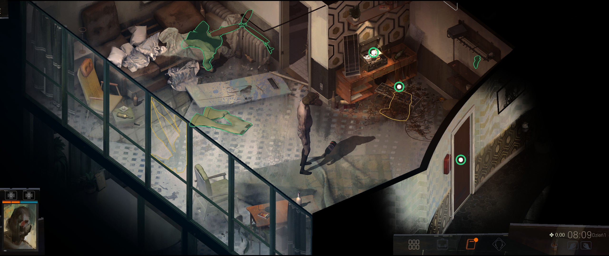
podświetlanie interaktywnych obiektów (tab)
rozmawianie powiązane jest ze statystykami a te z kartą postaci rodem ze staroszkolnego rpg, choć wyjaśnienie cech bywa niejasne, przez co rozwijanie postaci przechodzi raczej w sferę intuicji niż zaplanowanego postępu;
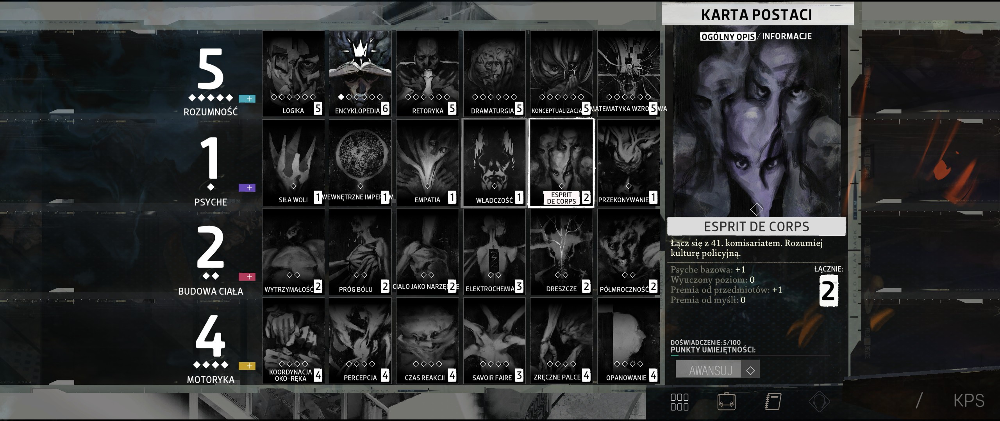
karta postaci: esprit de corps
odmianą do rozmawiania ze sobą jest rozmawianie z partnerem, który ma czasem coś do powiedzenia; pojawia się wtedy pytajnik przy jego wizerunku w interfejsie, co można absolutnie zignorować;
rozmówki z samym sobą pozwalają na poznanie nowej myśli albo uzyskanie dodatkowego questa; analogicznie, natrętne myśli można odrzucać, co nie da nam questa, aczkolwiek w niektórych przypadkach nie można się z tego wycofać;
rozmowy z samym sobą lub z innymi ostatecznie prowadzą do wyborów; do większości opcji dialogowych można powracać w nieskończoność, jednak niektóre pojawiają się tylko raz;
niektóre wybory prowadzą do alternatywnych zakończeń;
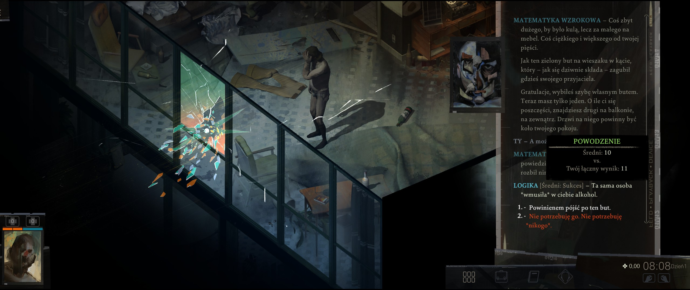
wybór: iść po but albo nie iść
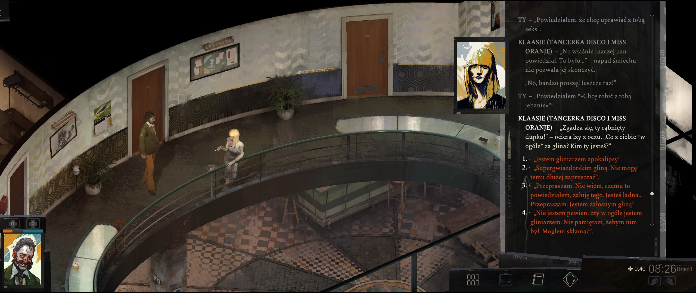
wybory: apokaliptyczny glina, supergwiazdor, żałosny glina, zaprzeczanie
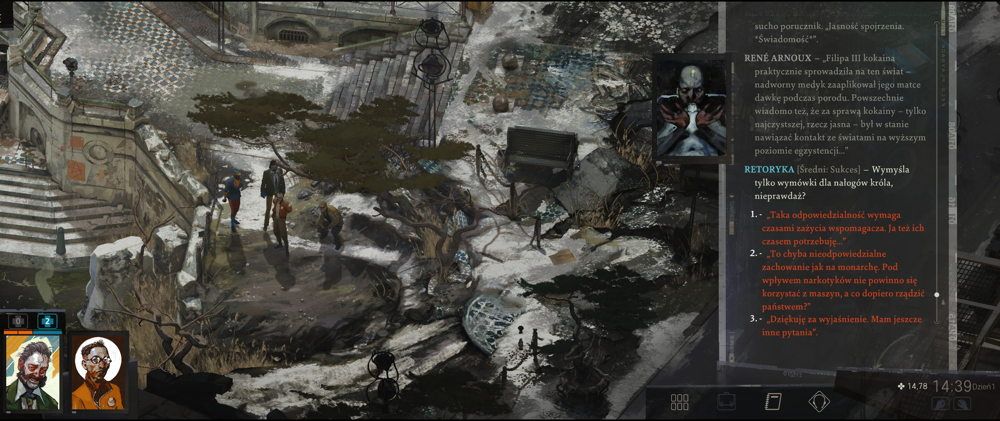
wybory: retoryka
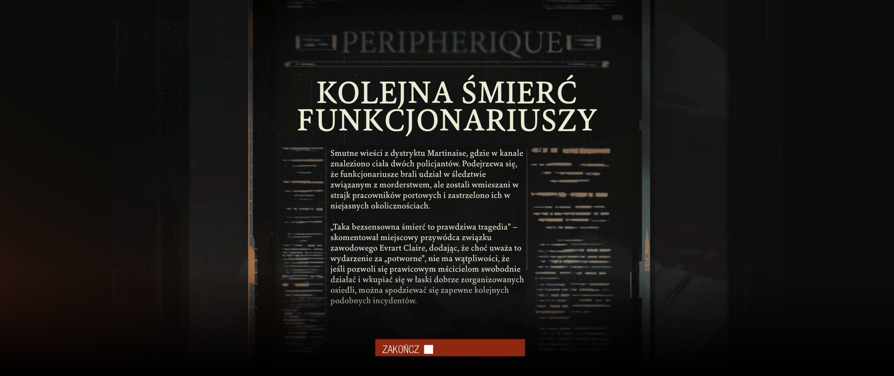
koniec gry: kolejna śmierć funkcjonariuszy
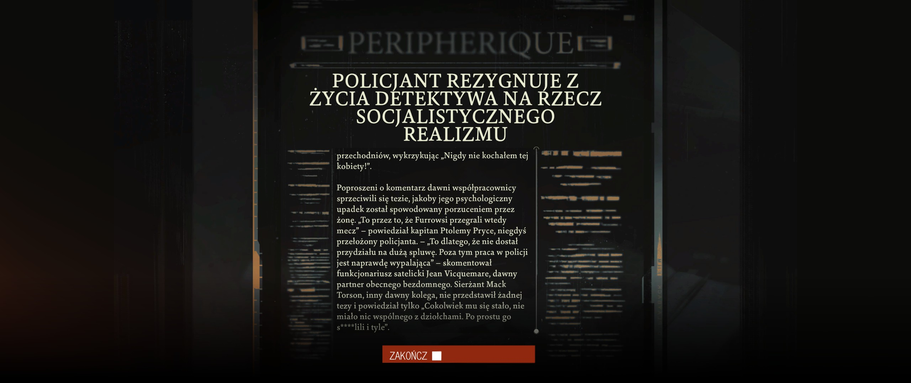
koniec gry: policjant rezygnuje z życia detektywa na rzecz socjalistycznego realizmu
nowe myśli trafiają do schowka myśli (thought cabinet), gdzie można je internalizować, co trwa jakąś chwilę; w trakcie internalizowania otrzymuje się minusy do statystyk, a po jej zakończeniu bonusy, czasem dość unikalne; kłopotliwym jest to iż nie wiadomo z góry co się otrzyma;
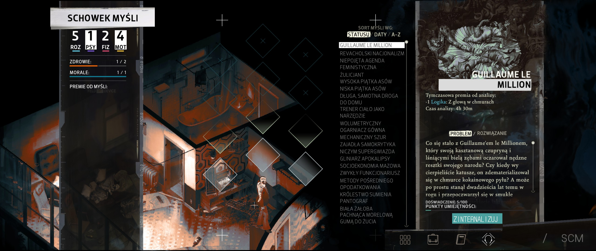
schowek myśli: guillaume le million
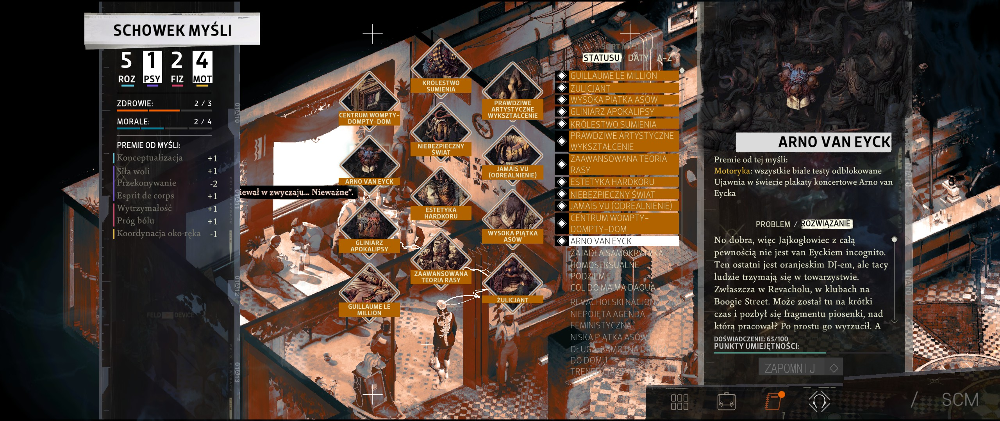
internalizacja: arno van eyck i unikalny bonus
niektóre możliwości zależą od czasu dnia; nowe opcje pojawiają się też, gdy nie podąża za nami nasz partner w śledztwie niczym cień; kontynuowanie pewnych zadań zależy od pory tygodnia;
istnieją tylko dwa typy obrażeń: od zdrowia i od morale; utracenie wszystkich „ładunków” prowadzi do śmierci; tłumaczy się to śmiercią z powodu zaniedbań jak np. niedostateczne niewyspanie się; z tego powodu, gdy posiada się jedynie jeden ładunek zdrowia lub morale, nie jest czasem jasnym, że otrzymaliśmy obrażenia z powodu jakiejś akcji, bo włącza się animacja przejścia w zaświaty;
jeżeli chodzi o losowość w postaci rzutu kośćmi to mamy tu do czynienia z trzema rodzajami testów: białym (powtarzalnym), czerwonym (jednorazowym), biernym (zależnym od statystyk); ostatecznie wszystko sprowadza się do statystyk postaci, gdyż prawdopodobieństwo sukcesu zależy właśnie od nich; jednakowoż zwiększyć prawdopodobieństwo można również niektórymi opcjami dialogowymi czy zasadniczo zdobywaniem informacji w danym temacie; tak samo można je zmniejszyć wybierając je bezmyślnie, te które powodują dyskomfort u rozmówcy; wydawać by się mogło, że jest to prawdziwa losowość, tj. 97 % to nadal 3 % szansy na niepowodzenie, jednak niekoniecznie musi tak być – wystarczy co najwyżej 11 powtórzeń po wczytaniu gry, by w końcu zaliczyć test, nawet przy 3 % szansy;
biały test: matematyka wzrokowa (visual calculus)
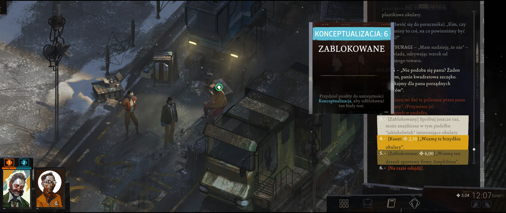
zablokowany biały test (konceptualizacja)
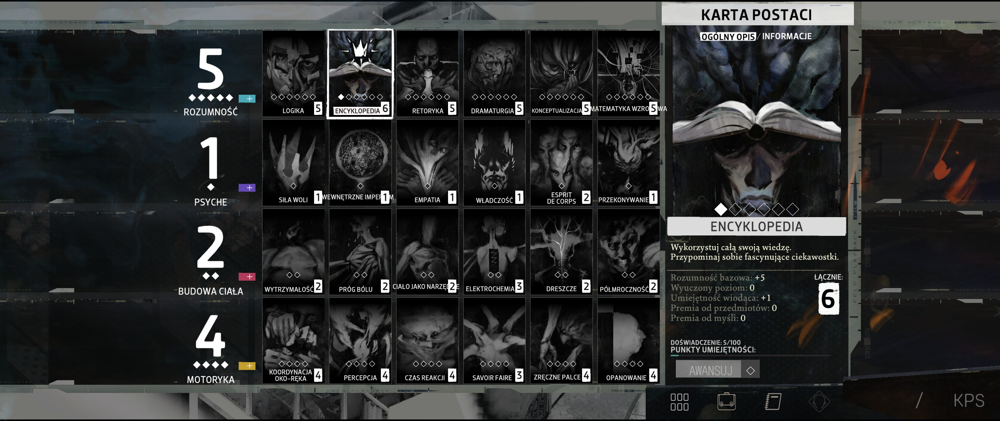
karta postaci: encyklopedia
wszystko wydaje się drogie, bo pieniędzy jest mało; trzeba zinternalizować odpowiednią myśl by pieniądze same się pojawiały po biernych testach encyklopedii;
trzymając reklamówkę w dłoni można zbierać butelki, które można później sprzedać; jest to dobry sposób na zdobywanie pieniędzy, aczkolwiek nie ma ich znowu aż tak wiele, nawet jeżeli zyskamy bonus od internalizacji myśli o żulicjancie;
można tu kraść i oszukiwać; można również poprawiać statystyki kosztem zdrowia (alkoholem) albo morale (papierosy);
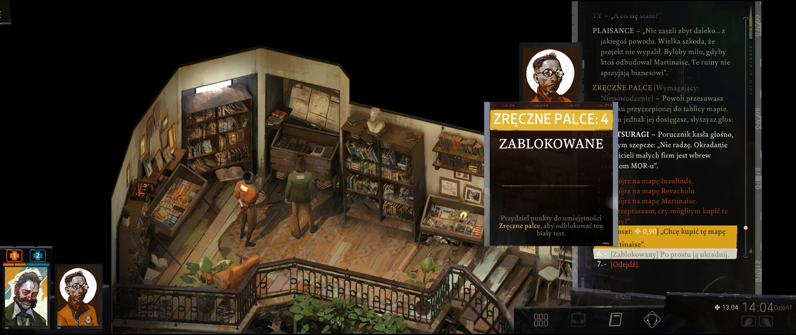
zablokowany biały test (zręczne palce)
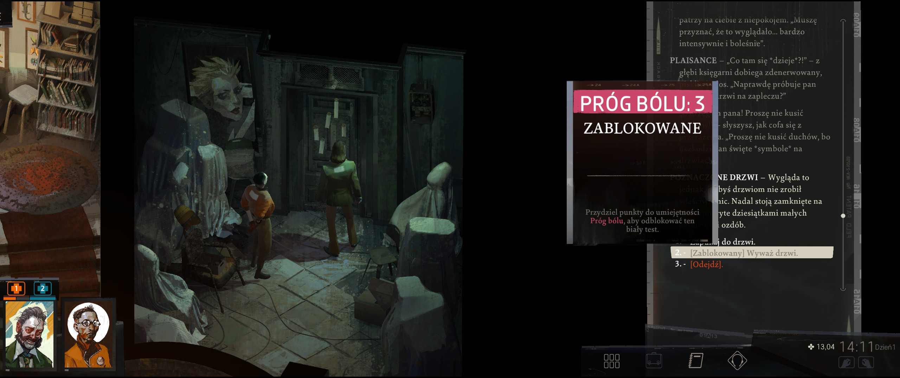
zablokowany biały test (próg bólu)
z niektórymi przedmiotami można wejść w interakcję w menu ekwipunku; jedną z takich dodatkowych atrakcji jest czytanie książek, a w zasadzie to ich analizowanie;
można przybliżać i oddalać widok, co czasem może ukrywać interakcje; rzecz w tym iż istnieją takoweż, które prowadzą do rozmowy z innymi, którzy znajdują się poza zasięgiem widoku, bo gra nie koryguje perspektywy automatycznie; dodatkowo, nie jest czasem jasnym gdzie można chodzić a gdzie nie, bo ścieżki potrafią być zagmatwane; przynajmniej działa klasyczny dwuklik z bieganiem rodem z gier point-and-click; niemniej, czasami dwuklik zamienia się w jednoklik – ewidentny błąd;
w ciemnych miejscach należy wyposażyć się w latarkę; latarka wodzi za kursorem myszka; trochę chaotycznie to wygląda gdy po prostu wybieramy opcje dialogowe;
pierwsze natrafienie na pewne sytuacje wywołuje głos agenta samouczka, który instruuje nas np. że by przyspieszyć czas można odpocząć na ławce;
kim nieustępliwie podąża za nami, ale przynajmniej nocą można go zgubić; można mu też zamknąć drzwi przez nosem, lecz jedynie sztuczka graficzna – na następnej planszy będzie znowu przy nas;
kimowi zdarza się wejść pod tekstury;
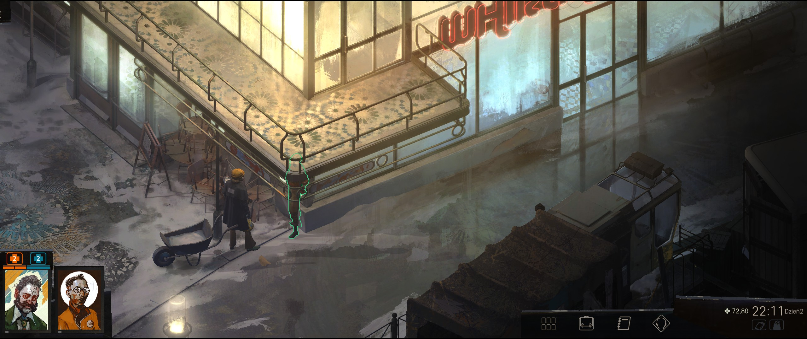
kim kitsuragi pod teksturami whirling-in-rags (wirując w łachmanach)
# artyzm i filozofowanie
artystycznie ładna gra w stylu impresjonistycznych obrazów olejnych;
wydaje się być takim trochę strumieniem świadomości z wystarczająco wyrazistym ambientem;
niektóre opisy przedmiotów są „brudne”, być może nadmiernie realistycznie swą brzydotą;
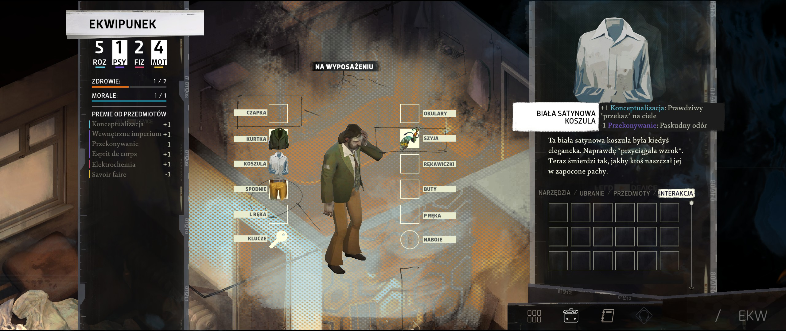
ekwipunek: biała satynowa koszula i jej statystyki
często poruszane wątki filozoficzne są sprowadzane do śmieszności; przykładowo: co to jest nic? jak zmierzyć nic? → zajmijmy się niczym (dziura szaroty); wszyscy ludzie piją wodę, wszyscy którzy to zrobili umarli → wszyscy umrzemy (gliniarz apokalipsy); policjantem może być każdy, żul też jest każdym → jestem żulicjantem, będę spał w śmietniku by być bliżej zwykłych ludzi (hobocop);
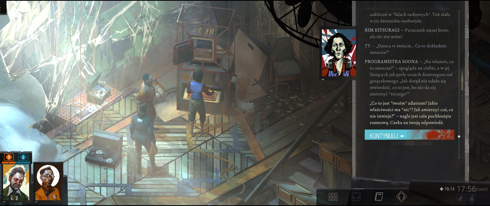
programistka soona: jak zmierzyć nic?
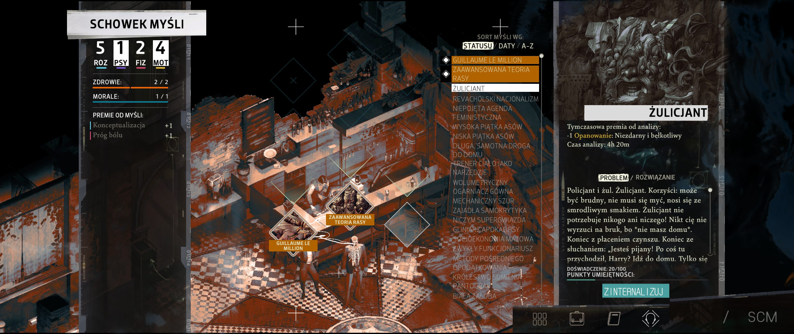
internalizacja: żulicjant (policjant-żul)
z elementów humorystycznych można wspomnieć o panu „gorący kubek”, co jest wypowiadane po polsku; tudzież w świecie przedstawionym istnieje lud, gdzie każdy nazywa się kojko, co jest bodaj drwiną ze słowiańszczyzny; wspominany jest ponadto niejaki pan sulisław zawisza;
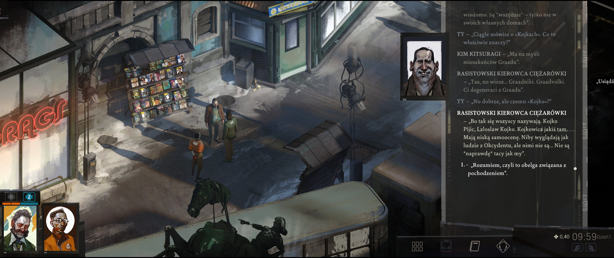
rasistowskie przedstawienie słowian
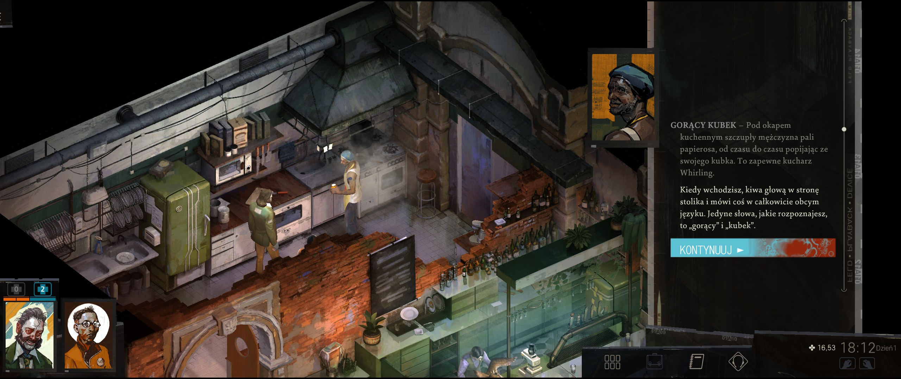
pan gorący kubek, polak w revacholu
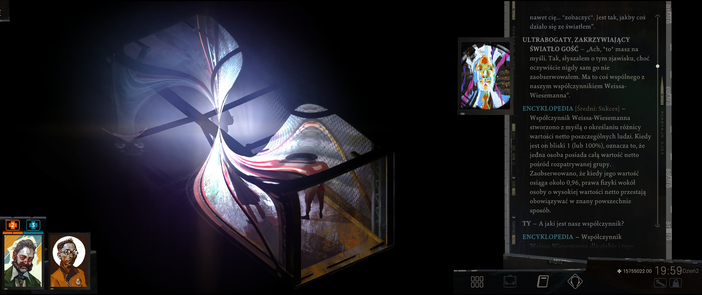
element chyba humorystyczny: ultrabogaty zakrzywiający światło gość (przejaw plazmy)
można sobie porozmawiać ze starymi ludźmi o kanapce, która jest niebywale wręcz skandalicznym symbolem ucisku, który wymagałby uspołecznienia;
świat przedstawiony jest jakby światem nam znanym, lecz jednak innym, z inną kulturą i historią; podejście to było inspirowane myślą twierdzącą, że gdyby historia ludzkości potoczyłaby się inaczej, to i tak ludzkość przechodziłaby przez te same etapy rozwoju, ergo byłoby to to samo tylko inaczej;
jakkolwiek używa się tu wielu różnych języków jak szwedzki, niemiecki, czy łacinę, to jednak dominuje francuski;
postaci i ich motywacje są różnorodne; mamy strajkujących stoczniowców, wytłumionego emocjonalnie sprzedawcę po dobrowolnym wzięciu udziału w sprzątaniu bałaganu po próbie budowy reaktora atomowego przez biedaków z dzielnicy biedoty, swego rodzaju państwo-miasto, kapitalistę-prywaciarza, dziewczę stojące przed księgarnią z powodu poczucia obowiązku i dyscypliny, naćpane dziecko rzucające kamieniami w wisielca;
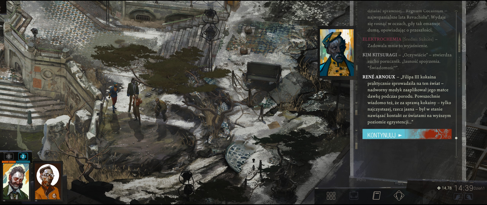
wyjaśnienie starego świata króla filipa trzeciego
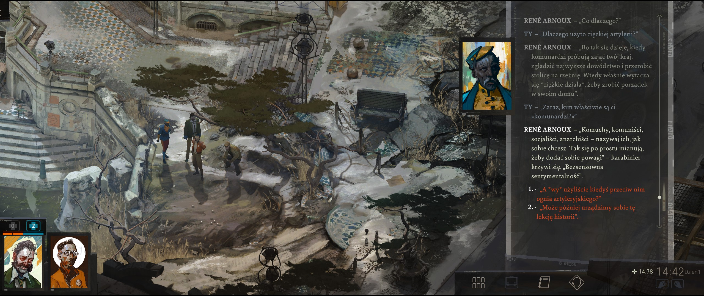
wyjaśnienie komunardów
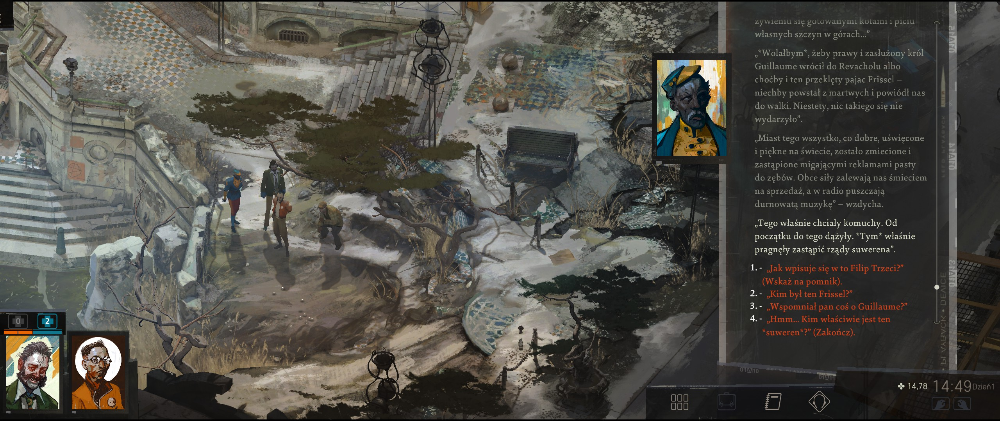
antykomuszy monolog
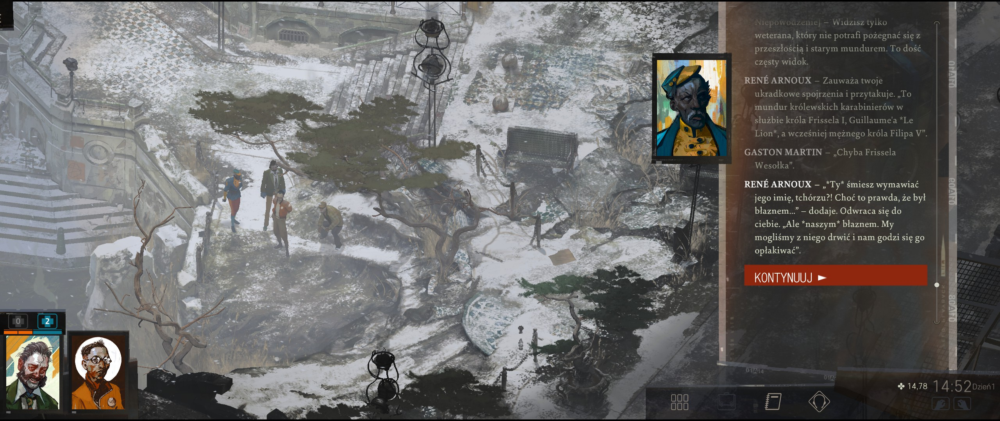
był błaznem ale naszym
odkrywanie nowych miejsc, zwłaszcza w ciemnych budynkach, gdzie należy użyć latarki, jest nawet intrygujące; aczkolwiek głównie dotyczy to zagubionej strefy handlowej (doomed commercial district);
cytując samą grę: „wszystko jest połączone ze wszystkim”; niektóre drobne kwestie potrafią się ze sobą ciekawie łączyć w jedną kwestię; dotyczy to zwłaszcza kościoła dolores dei z programistką sooną, gdzie rozwiązanie zagadki anomalii prowadzi w stronę szaroty, choć nic na to nie wskazywało, a co łączy się z tematem zagubionej strefy handlowej; pozornie niezwiązane ze sobą tematy orbitują wokół tego samego, tyle że od innej strony;
niektóre questy budują niejako aurę tajemnicy, jak np. spotkanie z mitycznym insulindiańskim straszykiem, tajemnicze niebieskie drzwi w motelu, pancerne drzwi bunkra nie do otworzenia, nawiązanie połączenia z okrętem wojennym koalicji łucznik; a przede wszystkim sama szarota stanowi tajemnicę istnienia;
raz na jakiś czas gra ukazuje nam malowane wyobrażenie zamiast świata przedstawionego;
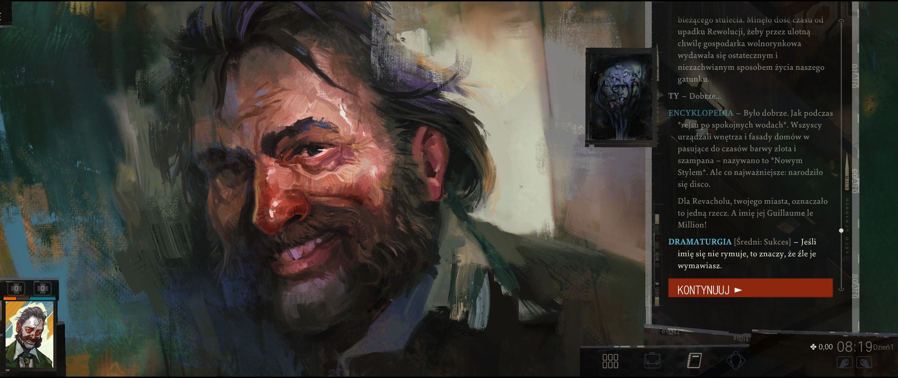
wyjaśnienie disco przez encyklopedię 1/2
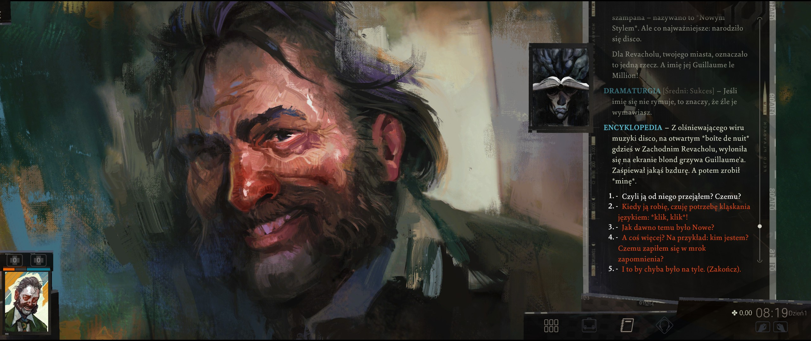
wyjaśnienie disco przez encyklopedię 2/2
gra pokazuje własną wersję historii i świata, a najbardziej wyraźnym tego przejawem są nazwy własne; kineema to powóz motorowy będący odpowiednikiem samochodu spalinowego; matematyka wzrokowa (visual calculus) pozwala na zwizualizowaną rekonstrukcję wydarzeń, choć nie ma takich sytuacji wiele; można sobie pomóc w ogarnianiu świata przedstawionego inwestując punkty w encyklopedię;
gra oferuje w menu opcje dotyczące głosów, czcionkę dla dyslektyków, tryb streamera, czy integrację z twitchem;
mapę trzeba sobie zdobyć, by móc jej używać, lecz czasem jest ona dostępna po przełączeniu się na listę zadań – w ramach błędu; nie, żeby była szczególnie potrzebna;
gra używa kilku czcionek; ta używana na mapie jest wyraźnie niedostosowana do języka polskiego;
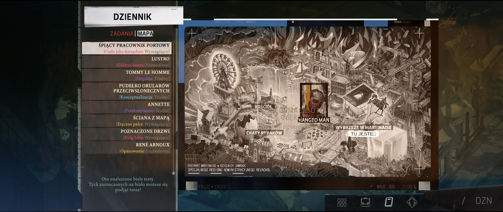
mapa i jej beznadziejne czcionki
tryb kolażu został dodany najwyraźniej nieco na siłę; niemniej, zawiera on listę postaci, dzięki czemu można się dowiedzieć kogo się jeszcze nie widziało; tryb ten pozwala jedynie na tworzenie scen z intencją wykonania zrzutu ekranowego;
przewijanie w interfejsie kółkiem myszki jest wyjątkowo wolne;
można wybierać opcje dialogowe klawiszami numerycznymi, lecz powoduje to iż dla kolejnych wyborów opcja pierwsza jest zawsze zaznaczona na biało jak przy wyborze myszkiem; jest to nieco kłopotliwe, albowiem wybrana już wcześniej opcja staje się wyblakła by się wyróżniać; są one przygotowane od góry do dołu, tj. wybieranie późniejszych a potem wcześniejszych zaburza nieco logikę, aczkolwiek w niektórych przypadkach to nie działa;
można przerywać konwersacje by do nich powrócić później;
podpowiedzi na ekranach ładowania trudno przeczytać, bo gra za szybko się ładuje;
zapis stanu gry wiąże się z nazwą lokacji, w której został wykonany; nadpisywanie tegoż nie zmienia tego opisu;
na liście białych testów nie odznaczają się te, których później nie można wykonać, np. ten z daniem w mordę miarogłowemu; to ogranicza użyteczność tej listy skoro należy ją samodzielnie filtrować;
niektórych animacji nie można przewinąć, zwłaszcza tych fabularnych; dotyczy to również niepomijalnych napisów końcowych;
niektóre drzwi można otworzyć jedynie z drugiej strony;
występuje tu wczytywanie przy wchodzeniu do budynków, jakkolwiek małych;
# uwagi różnorakie
jeżeli się chcieć czepiać to znajdą się literówki w tłumaczeniu, np.: „tanieć” zamiast „taniec” albo „broń noże!” zamiast „broń boże”;
wydaje się że co jakiś interwał daje się słyszeć dźwięk w świecie gry wskazujący na niechybny upływ czasu;
do eksploracji i wściubiania nosa w każdy zakamarek zachęcają widoczne w tle w rzucie izometrycznym niedostępne miejsca;
kilka kwestii dialogowych jest znacznie głośniejszych od innych; innym razem zaś nie ma głosu do tekstu; nie jest to jednak liczne;
dodatkowe kontenery z paliwem pozostają na swym miejscu i nie można ich zabrać; zagracają nieco widok podświetlanych obiektów interaktywnych;
rozwijając encyklopedię można dowiedzieć się o szarocie z biernych testów, jednak w przypadku questa w kościele gra nie zalicza tego do wiedzy o szarocie; nie wzięto zatem pod uwagę radzenia sobie z takimi przypadkami;
ze zwiastunów można się dowiedzieć, co się pominęło; np. spotkanie na kanapie z miarogłowym, podnoszony most, śnieg;
spotkanie z uroczym miarogłowym (measurehead)
niektóre zadania ciągną się aż do samego końca gry;
opowiadanie prowadzi do dwóch wielkich kamieni milowych; oba z nich oferują rozwiązanie w postaci postępujących po sobie wymagających czerwonych testów;
# odbiór społeczności
steam oferuje na swój sposób interesujące dyskusje co do tej gry; jej treść może być dla niektórych równie kontrowersyjna jak kontrowersje wokół samej gry; sprawa za/um jest wyjątkowo zagmatwana i większość nie ma ochoty zagłębiać się w ośmiogodzinne eseje pełne szczegółów, dlatego też panuje powszechne przekonanie, że twórcy zostali oszukani, a w zaum studio pracują jedynie klakierzy wielkich korporacji; a jednak, opowiadanie mówiące o tym, co się stało, nie jest czarno-białe;
wszystkie poniższe trzy questy są fabularne; rzecz w tym, że niektóre możliwości stają się dostępne dopiero od trzeciego dnia, a inne w forcie morskim na wyspie, czyli w ostatniej lokacji gry;
Your task is to look for bullet residue in three places. The first is at Land's End, the area reachable by going north along the narrow path between the church and the abanonded Feld R&D building. Near the northernmost tip, you'll come to a dilapidated tower. Just south of the tower, you'll get a blue orb over your head that lets you examine the shot. Note that this is not an interactable object; only by standing in the right spot will the orb appear. (…) while it's a bit zoomed in, notice the position of the three fallen beams just above the character and the rock he's standing beside.
The second shot (the boardwalk shot) is in the basement of the Feld R&D building. This cannot be accessed until you're ready to pursue the suspect (…). Once you're in the basement, equip your flashlight, then look at the far right area of the basement before the turn into the tunnels. A yellow orb should appear over your head if you have a decent Perception skill. Click this to reveal a new, small area just to the right of the wall. Walk into it and examine everything in there. When you examine the window near the ceiling, it'll clear the second part of the side quest.
The final site for a shot is on the island, which is beyond a point of no return for the story. (…) Once you're on the island, the path is mostly linear. Exit out the first structure through its southeastern door. Then, explore around the eastern part of the island to find a dilapidated structure. Inside that dilapidated structure is a mattress that, once examined, will clear the quest.
It will remain unsolved until near the end of the game, just before the murder suspect is apprehended. Harry will find Iosef Lilianovich Dros at the Sea Fortress and collect his Triangong 4-46.
Fairweather T-500 Greaves: Requires getting the Hanged Man's boots. Taken off the corpse behind the Whirling-in-Rags.
Fairweather T-500 Gauntlets: Can be found on Day 3+. Find the armoured gloves in the sand castle behind Lilienne Carter's house in the Fishing Village.
Fairweather T-500 Cuirass: Can be found on Day 3+. Worn by Gary, the Cryptofascist, found northwest of the Feld building.
Fairweather T-500 Helmet: Can be found after the Mercenary Tribunal. Located in the Insulindian Phasmid's nest outside of the Flak Tower at the Sea Fortress, after meeting The Deserter.
poczucie solidarności; pojęcie to zostało zapoczątkowane przez armię francuską i odnosiło się do silnego ducha jedności i lojalności między członkami danej jednostki wojskowej; koncepcja ta została później zaadaptowana do innych dziedzin życia, w tym do biznesu i organizacji;
finezja, sprawność motoryczna w wykonywaniu czynności fizycznych, które wymagają sporo wdzięku i precyzji (u baleriny jest ona całkiem spora); „savoir faire" to dosłownie „wiedzieć jak”: savoir – wiedzieć, faire – robić;
część mózgowia człowieka i niektórych zwierząt, kształtem przypominająca migdał, odpowiada za odczuwanie negatywnych emocji, agresji oraz za reakcje obronne organizmu;
ujmowanie intuicji poznawczych w pojęcia; proces tworzenia pojęć na podstawie ogólnej wiedzy o świecie poprzez ustalenie problematyki oraz definicję danego słowa;
gałąź zoologii, zajmującą się zwierzętami, których istnienie powszechnie jest odrzucane ze względu na brak wiarygodnych, naukowych dowodów; są to stworzenia typu yeti lub czupakabry;
teoria głosząca, że cechy człowieka, w tym jego zachowanie i role społeczne, są w dużej mierze zdeterminowane przez czynniki biologiczne, szczególnie genetyczne;
niedoświetlony, słabo wywołany, mokry kolodionowy negatyw na szkle, który oglądany na ciemnym tle wygląda jak obraz pozytywowy; ambrotypia pozwala uzyskać jeden unikatowy obraz, czyli bez możności wykonania odbitek;
nazwa monety krugerrand zawdzięcza swoje pochodzenie połączeniu dwóch słów – nazwiska prezydenta republiki południowoafrykańskiej paula krugera oraz oficjalnej waluty rpa określanej jako „rand”;
komunista, socjalista, anarchista itp.; uczestnik komuny paryskiej w 1871 r.; wielu komunardów poległo w czasie walk oraz zostało straconych z mocy wyroków rządowego sądu wojennego;
w kontekście teorii ruperta sheldrake'a odnosi się do pola informacyjnego, które organizuje formę i zachowanie organizmów żywych, działając jako dodatkowy czynnik genetyczny, oprócz dna; teoria ta zakłada, że pola morficzne posiadają własną pamięć i oddziałują na organizmy poprzez rezonans morficzny;
przezroczysta lub barwiona, szeleszcząca folia celulozowa, otrzymywana z regenerowanej wiskozy; tworzywo to jest łatwopalne, a pod wpływem wody traci wytrzymałość;
pogląd, który można wyrazić zdaniem: istnieję tylko ja a reszta to moja wyobraźnia; od łac. solus – jedyny, ipse – sam; pogląd filozoficzny, zgodnie z którym istnieje tylko umysł danego podmiotu, a cała reszta, w tym świat zewnętrzny i inni ludzie, jest jedynie jego wytworem lub wrażeniem;
kawiorowi socjaliści; pejoratywne określenie na kogoś, kto twierdzi że jest socjalistą, jednocześnie żyjąc w sposób zaprzeczający socjalistycznym wartościom;
roślina z rodziny astrowatych; w wielu krajach europejskich, w tym w polsce, kwiat ten jest symbolem pamięci i szacunku, często używanym w ceremoniach upamiętniających ofiary wojen; szarotka jest także symbolem czystości, miłości oraz przetrwania, co sprawia, że jest częstym motywem w sztuce, literaturze i rzemiośle;
jednolita grupa ludzi; genetyczne znaczniki naszego rodowodu; cały rodowód człowieka „po mieczu” i „po kądzieli” zrekonstruowany na podstawie badań dna tworzy szereg gałęzi, dokładnie tak jak to jest w klasycznym drzewie genealogicznym;
określenie twórczości artystów nieprofesjonalnych; obrazy „naiwne” charakteryzują się deformacją przestrzeni i perspektywy lub jej brakiem, skrajnie subiektywnym punktem widzenia, prostymi technikami oraz przywiązaniem do szczegółu, odwołaniami do świata magicznego i symbolicznego, lecz także do życia codziennego;
rodzaj roślin z rodziny parolistowatych; gwajakowce zostały niemal wytępione zupełnie z powodu wielkiego zapotrzebowania na nie jako leki na choroby weneryczne; drewno tych drzew jest bardzo cenione ze względu na twardość i trwałość, także w wodzie morskiej;
„w matni” (l'assommoir); siódma część cyklu rougon-macquartowie émile’a zoli, opublikowana w 1877 r., opowiadająca o życiu najniższych warstw społecznych w paryżu epoki 2-go cesarstwa; główną bohaterką utworu jest gerwazyna macquart;
ekonomiczna doktryna określająca zasady makroekonomicznej polityki gospodarczej, będąca przeciwieństwem merkantylizmu; wyraża dążenie do wolności gospodarowania oraz wyzwolenie z wszelkich zależności feudalnych i oznacza działanie w warunkach wolności osobistej, równości wobec prawa, poszanowania własności prywatnej; rolę państwa sprowadza wyłącznie do pozycji gwaranta podstawowych swobód obywatelskich i dlatego, z założenia, państwo nie może ingerować w sferę ekonomiczną;
gruba tkanina lniana, niekiedy bawełniano-lniana lub z dodatkiem włókien syntetycznych, o dużej wytrzymałości na rozrywanie i ścieranie, nasycona środkami hydrofobowymi (wodoodporna);
belka dźwigająca bezpośrednio pokrycie dachu, ustawiona prostopadle do okapu; pochyła belka więźby dachowej, najczęściej drewniana, oparta na murłacie lub oczepie;
„to nie wynika”; nielogiczna uwaga; stwierdzenie bez związku; błąd wnioskowania polegający na tym, że dany wniosek nie wynika logicznie z przesłanek, z jakich się go wywodzi;
kwas gamma-aminomasłowy; neurotransmiter hamujący, zmniejsza aktywność neuronów w obrębie mózgu; receptory błonowe służące za neuroprzekaźniki; pełni kluczową rolę w regulacji aktywności neuronalnej oraz funkcji układu nerwowego, np.: w regulacji nastroju, snu, lęków oraz funkcji poznawczych;
część świata w której znajduje się revachol; isoli jest sześć: mundi, insulinde, katla, graad, samara, iilmara;
isole
azymuty świata; na północy – mundi, na południu – graad, na wschodzie – samara, na zachodzie – seol; insulinde znajduje się w centrum znanego świata, a iilmara jeszcze gdzieś indziej;
miasto akcji zlokalizowane na isoli insulinde, oceanie insulindyjskim, archipelagu le caillou; podzielone jest ono na dzielnice; revachol zachodni to bardziej majętna część, zaś martinaise to część biedoty; w tej ostatniej doszło do powstania komuny revacholskiej; technicznie rzecz biorąc revachol jest okupowaną republiką ludową, okupowaną przez demokracje koalicji międzynarodowej;
semenowie
mieszkańcy ile du fantome, wysp semenine, na południu revacholu;
ozonne
archipelag w pobliżu revacholu z bogatymi mieszkańcami;
siigay, morelowe lenno
archipelag na isoli samarskiej, dawna kolonia revacholu;
węglowe miasto
plątanina pozamykanych kopalni na zachód od jamrock, na brudnym zboczu mont martin; najdalszy z możliwych obszar revacholu;
armia dawnych czasów; jej żołnierze byli wyposażeni w łuskowe zbroje (lamelowa) i czarnoprochowe pistolety skałkowe (flintlock); 5-wieczny styl koszenia narodów będących wrogami ludzkości;
pyrholidon
narkotyk; wywołuje odczucie ciepła i fascynację ruchem światła; opracowany w celu zapobieganiu chorobie popromiennej; ma psychodeliczne skutki uboczne; powoduje żółknienie oczu;
stos ludowy
był to generator rozpadu cząstek typu u (prymitywny reaktor atomowy), który uległ awarii natychmiast po uruchomieniu; spowodowała ona wyciek do rzeki esperance odpadów radioaktywnych; ze skutkami pomagała ratownicza brygada wsparcia, grupa ochotników w pomarańczowych kamizelkach bezpieczeństwa próbująca opanować wyciek;
seraski plastik
tworzywo sztuczne, które łatwo topi się na słońcu;
samarskie masło
masło z mleka koziego;
katla, arda, hjelmdall
tereny na północy, gdzie występują zorze polarne;
dick mullen
głównodowodzący revacholskich sił kawaleryjskich; bohater licznych książek, a w szczególności „dick mullen i pomylona tożsamość”, gdzie detektyw mullen traci pamięć, by rozwiązać sprawę;
bezkształtna, pozbawiona materialnej formy przestrzeń, która pokrywa ponad 70 % powierzchni elizjum i wciąż się poszerza; podróżowanie po niej jest możliwe, ale śmiałkowie mogą przypłacić to pomieszaniem zmysłów; zagadnienia z nią związane bada entroponika, jako że jest to fenomen wyrażający się falami radiowymi będącymi amalgamatem przeszłych wspomnień;
entropolizm, entroponika
entropolizm – pragnienie, by szarota pochłonęła świat; entroponika – nauka badająca przejawianie się szaroty;
łac. disco – uczę się; disco to pewnego rodzaju sposób bycia, ubierania się i zestaw poglądów na życie, powstały w czasach prosperity, gdy na ulicach dominowało złoto i pstrokacizna; silnie związane z iście gombrowiczowskimi minami wywodzącymi się od odpowiednika rock-and-rolla; można by powiedzieć, że disco określa podejście w stylu: hulaj dusza, piekła nie ma;
elizjum zaś to po prostu staroświeckie określenie na stary świat, używane w tamtym czasie; swego rodzaju utopia, gdzie każdy jest biedny i bogaty jednako;
disco elysium jako nazwę własną można uznać za określenie świata, w którym zawsze dzieje się to samo; ostateczni każdy oddaje się rozrywce i konsumpcji;
maunowie
obraźliwe określenie mieszkańców pierwszego świata; większość z nich ma wypryski skórne i nie toleruje laktozy; zakładają drewniaki do parad ulicznych i przywdziewają frędzle na czapkach;
seol
protekcjonistyczne, izolacjonistyczne, panisolarne państwo na zachód od isoli insulindiańskiej;
kojko
lud ogarnięty niewyjaśnioną obsesją ziemniaków; dzielą się na mikroskopijne etnopaństwa; każdy z nich ma na imię lub nazwisko kojko; wydaje się to być pastiż na wschodnich europejczyków;
międzynarodówka moralistyczna; unia centrolewicowych i centroprawicowych partii z całej strefy reala (pieniądza); jednym z jej projektów jest rząd koalicyjny kontrolujący revachol (strefę półmroku międzynarodowego prawa); innymi są: mor (służby specjalne), większość międzyrządowych organizacji; doloriańczycy, wierzą że kontynuują humanistyczny projekt jej niewinności dolores dei (kobietę-symbol humanizmu, internacjonalizmu, państwa opiekuńczego); technicznie rzecz biorąc technokraci; symbolem moralinternu jest niebieska niezapominajka; motto moralinternu to: miłość, współczucie, samodyscyplina;
spotkanie
ośrodek resocjalizacyjny rzeki esperance, wojskowe więzienie koalicji;
insuldow
dowództwo misji insulindiańskiej „rządu koalicyjnego”;
sprawa zaczęła się od pandemii tzaraathu, niezwykle żarłocznej choroby prionowej, która nie została opanowana przez rząd graadu, przez co został on obalony przez krasa mazowa (mężczyznę o imponujących bokobrodach); symbolem komunistów stał się pentagram albo gwiazda z porożem; w tym czasie odkryto tranzystory i muzykę rockową; rewolucja zmiotła komunistów i anarchistów z powierzchni ziemi, jako że ostatecznie zginęły 2 miliony ludzi; zastąpili ich liberałowie (klasa średnia i pochodne); część z liberałów poparła przewrót (ultrowcy, ultraliberałowie); w praktyce władzę przejęli moraliści w postaci koalicji narodów (graad, mesque, wesper, messyna, oranje, sur-la-clef) mając za sobą siłę zbrojną;
moraliści chcą zachować istniejący porządek rzeczy (status quo); stali się tymczasowymi władcami revacholu o przedłużonej kadencji, tworząc strefę kontroli (miasto-państwo podzielone na strefy wolnorynkowe), egzekwowaną przez mor (oddolną milicję obywatelską); obowiązki mor-u definiują: ustawa o sytuacji nadzwyczajnej, o podróżach morskich i o zadośćuczynieniu (tzw. zmierzch prawa międzynarodowego); wcześniej próbowano się z monarchią i komuną; revachol to żyzna wyspa mogąca wyżywić 200 milionów ludzi, gdzie miesza się wszystko; do tego powstał moralintern (międzynarodówka moralistyczna) z mottem „niebieska niezapominajka, fragment nieba”; zachodni revachol pozostawiono niejako samemu sobie ze względu na 11 lat wojny miejskiej, oznaczającej walki gangów, sknocony plan prywatyzacji, zagrożenie odpadami promieniotwórczymi; zachodni revachol nazwano strefą międzynarodową, a porządek przywrócił mor w czynie obywatelskim; wschodni revachol przekształcił się w największy na świecie raj podatkowy pod egidą społeczności międzynarodowej; wtedy odkryto disco i luzowanie ilościowe w gospodarce;
suprakultura, infrakultura
suprakultura odnosi się do powszechności związanej ze stadem; infrakultura to świat fantazji z własną modą i żargonem, młodzi ludzie farbujący włosy i ubierający się jak staruszkowie;
jugo-graadzka wiosna
zamieszki lat 27-29, wywołane niepokojami na tle etnicznym i represyjnymi metodami ich tłumienia; wydarzenie uważane za koniec krótkiego okresu liberalizacji;
milieu, milieu ostatniego tchnienia
milieu – stacja zgłoszeniowa odbierana radiem dwukierunkowym; milieu ostatniego tchnienia – sekretna stacja radiowa, która nadaje prawdziwe morderstwa z prawdziwymi ofiarami;
cud siedmiokrotnego słońca
atmosferyczna anomalia z halo; wokół dużego słońca pojawia się sześć małych; flaga niepodległego revacholu;
kobieta będąca symbolem niewinności humanizmu, internacjonalizmu, państwa opiekuńczego; stanowisko niewinności wydaje partia założycielska; niewinność jest nieomylna; dama dworu, żona wpływowego marchese; doradczynia irene la navigateur, królowej suresne (sur-la-clef); wykraczała urodą poza pojęcie piękna; wykształcona i mądra kobieta; najwybitniejsza filozofka polityki swej ery na antedoloriańskim dworze; przyczyniła się do sfinansowania wypraw w głąb szaroty, co poskutkowało odkryciem „nowego nowego świata”, gdzie znajduje się revachol; została ukoronowana dwa lata po powrocie pierwszej ekspedycji (epoka doloriańska); gdy królowa padła przed nią na kolana, odczuwała emocje tak potężne, że jej płuca zaczęły świecić się, stąd stały się one symbolem miłości; 21 z 40 ówczesnych narodów mundi zaakceptowały jej zwierzchnictwo jeszcze przed koronacją w advesperascit w wesper-messynie, gdzie była otoczona przez terierów, tajną służbę niewinności; zamordowana 22 lata po koronacji ośmiokrotnym postrzeleniem w pierś ze strzelby myśliwskiej przez jednego z terierów, który uznał, że nie jest ona w pełni człowiekiem; potrafiła bowiem nie oddychać przez 10 minut; niektórzy uznali ją za zbrodniarkę wojenną ze względu na kampanie wojenne przeciwko mesce, programy przesiedleńcze w górze rzeki magritte, programy obowiązkowej edukacji, likwidowanie przeciwników rządów siłą wojskową armii ludzkości; blondynka o zielonych oczach; lubiła szachy i gry wojenne; jej mąż został wymazany z historii po wprowadzeniu jej na dwór; wpływ odkrycia isoli insulinde wyraża leitmotiv humanizmu: po życiu – śmierć, po śmierci – znów życie, po świecie – szarota, po szarocie zaś – znów świat;
besmertnye, besmertie
nieśmiertelni; przestępcze syndykaty z zachodniego revacholu; jednym z nich są niejakie czachy, które mają motto: „pierdol się, świecie” i używają pojazdów z licznymi neonami; zwykle przebywają w wypalonym kwartale w jamrock;
gnom z geromy
kryptyda; niewielkie stworzenie z błoniastymi palcami i wydatnym czołem; jego jad rozpuszcza wszelką materię organiczną;
col do ma ma daqua
kryptyda; „cienki szept dźwięku” albo „delikatny, niski szept”; samopowielające się fale dźwiękowe, niewidzialne i nieuchwytne; korpuskuła emitująca dźwięk;
antygwiazda
wesperska gwiazda rock and rolla; lubił na tyle zażywać narkotyki, że w końcu przeszedł mutację w nieboszczyka;
sam bo
samarski boks; styl charakteryzuje się ukradkowością i kozactwem;
corpus mundi
najwyższy szczyt świata;
rozkłady ewentualności
forma statystycznego przewidywania przyszłości używana przez koalicję do kształtowania świata;
konwencje bristelmunskie
seria umów międzynarodowych normujących zasady traktowania personelu wojskowego i cywilów na terenach objętych konfliktami oraz okupowanych; w praktyce nieegzekwowane;
milicja obywatelska insulinde
armia komunardów; czarno-biała armia rewolucji;
julia dobreva i jean abadanaiz
rewolucyjni kochankowie, podwójni komisarze rewolucji; ich miłość była nielegalna, dlatego się z nią ukrywali; zniknęli na chwilę przed poddaniem się rewolucji, co dodało tajemniczości do ich historii;
infra-materializm
szkoła komunizmu utożsamiana z ignusem nilsem, znanym z ludobójstw poprzez nabijanie na pal; koncepcja jest taka, że myśli pływają w powietrzu (mózg jest transponderem myśli politycznych w postaci fali energii), w związku z czym zakłada się iż przyjęcie historycznego materializmu może być kiedyś na tyle żywiołowe, że wierzenia ludzi przyjmą postać materialną w postaci rewolucyjnej „plazmy”; rewolucję dzieli się na poziomy; teoretyzuje się iż na poziomie pierwszym komunardzi zyskują bonus do cech fizycznych, w szczególności mogą uprawiać 8-godzinny seks; na poziomie drugim komunardzi mogą czytać myśli innych; na poziomie trzecim społeczność komunistyczna staje się prawami fizyki odrzucając te burżuazyjne;
# sprawa za/um
historia tego, co się stało z twórcami jest doprawdy dość zagmatwana i wyrażająca się odcieniami szarości;
*️⃣ kolektyw za/um
w 2009 r. powstało za/um jako estoński artystyczny kolektyw; jego pierwszym dziełem była książka „püha ja õudne lõhn” (sacred and terrible air); nie okazała się ona komercyjnym sukcesem, przez co robert kurvitz (autor) popadł w okres depresji i alkoholizmu na około trzy lata; ostatecznie udało mu się przezwyciężyć te problemy, a nawet pomógł kaurowi kenderowi (znajomemu) przezwyciężyć jego własny alkoholizm; w ramach wdzięczności kender zasugerował kurvitzowi, by miast skupiać się na powieści, spróbował wyrazić swój świat w grze wideo;
kender podjął się przygotowania gruntu prawnego ze względu na jego doświadczenie w świecie kapitalizmu;
w 2014 roku kender stał się znany w estonii w związku ze swą książką „untitled 12”, którą uznano za dziecięcą pornografię jako że opisuje ona niezwykle dokładne sceny przemocy seksualnej wobec kobiet i dzieci popełnianej przez główną postać; ostatecznie go uniewinniono; według kendera twórcą tekstu był w całości kurvitz, a on sam jej nawet nie czytał;
kurvitz utworzył zespół nadając mu nazwę „zaum”, co jest odniesieniem się do skonstruowanego języka zaum, inwencji rosyjskiego awangardowego poety wczesnych lat 1900.; w języku rosyjskim można to słowo uznać za skrót idiomu „взяться за ум” (vzyat'sya za um – opamiętać się, za um – za umysłem), co jest podobne do idei bootstrappingu (samokontynuującego się procesu);
gra została zapowiedziana na 2017 rok i nosiła tytuł „no truce with the furies”, wprost zaczerpnięty z wiersza „refleksje” r.s. thomasa (1995);
*️⃣ zaum studio oü
w 2015 roku powstaje studio „fortress occident”, które miało zajmować się tworzeniem gry; w „disco elysium” znajduje się nawiązanie do tej firmy w postaci fortecy katastrof (fortress accident);
projekt sfinansować zechciał margus linnamäe, znany estoński miliarder; postanowiono podzielić udziały w firmie następująco: linnamäe – 83 %, kender – 17 %;
jako że wielu spośród członków za/um dołączyło do „fortress occident” studio w pewnym momencie przechrzczono na „zaum studio oü”; liczyło sobie ono 30 osób; początkowo budynek firmy mieścił się w zapyziałym postkomunistycznym bloku, gdzie przez jakiś czas nie było nawet prądu, lecz w końcu postanowiono się przenieść do zgoła bardziej wygodnego miejsca;
później, 17 % udziałów w studio wykupił ilmar kompus, inny estoński biznesmen; podział udziałów zmienił się w 2018 roku na: linnamäe – 85.8 %, kompus – 14.2 %;
w czasie nadchodzącej premiery 2017 r. w zaum pracowało około 20-tu konsultantów i 25-ciu deweloperów, w tym 8-miu scenarzystów wspomagających kurvitza nad dialogami;
jakkolwiek początkowo zaum planowało wydać swą grę w „humble bundle”, o tyle plany te zarzucono na rzecz samodzielnego wydania; w marcu 2025 r. zaum ogłosiło również oficjalną mobilną wersję gry celującą w angażowanie użytkowników tiktoka;
skądinąd „atelier zaum studio” pozwala zakupić kurtkę kima kitsuragiego;
*️⃣ disco elysium
początkowo miejscem akcji miała być pojedyncza lokacja, jednak z czasem zaczęto rozszerzać pomysł, co doprowadziło do opóźnienia premiery i zmiany nazwy na „disco elysium” (łac. disco – uczę się);
za obrazopodobny styl artystyczny odpowiada aleksander rostov;
ścieżka dźwiękowa została napisana i nagrana przez zespół „british sea power”; członkowie zaum byli ich fanami i skontaktowali się z grupą bezpośrednio; nazwa hostelu-kafeterii „whirling-in-rags” (wirujący w łachmanach) została zaczerpnięta z tekstu piosenki „hail holy queen” z 2013 r. z albumu „machineries of joy”;
émile zola najprawdopodobniej najbardziej wpłynął literacko na „disco elysium”; helen hindpere (główna scenarzystka) wielokrotnie wyrażała swój podziw wobec francuskiego autora, wskazując na to że ona i inni pracownicy studia są wieloletnimi fanami jego pracy; twórcy powiedzieli również iż gra wiele zawdzięcza estońskiemu urbanistycznemu poecie (arvi siig);
scena, gdy harry du bois wymiotuje patrząc na wisielca, inspirowana była prawdziwą sytuacją ojca kendera, który był sowieckim milicjantem przydzielonym jako detektyw ds. morderstw;
w marcu 2020 r. wydano pierwsze tłumaczenie gry na język chiński; jednak sama gra nie spełniała rządowych wytycznych ze względu na przemoc i treści seksualne, dlatego szukano sposobów na to by ominąć proces zatwierdzający; recenzje chińczyków wskazywały, że gra przyciągnęła ich do siebie i docenili oni wiele jej ideologicznych aspektów;
w maju 2020 r. wydano aktualizację poprawiającą wydajność i dodano nowe tłumaczenia; część z tych tłumaczeń jest pracą społeczności, którą wdrożyło „testronic labs”;
w australii wydanie konsolowe gry wymagało klasyfikacji przez australijski urząd klasyfikacyjny (australian classification board); grze odmówiono takowej ze względu na przedstawienia seksu, przestępstw, przemocy, okrucieństwa, nadużywania narkotyków, a w szczególności przez „tak niebywale odrażające zjawiska, że stanowiące obrazę wobec standardów moralności, przyzwoitości i wstrzemięźliwości ogółem akceptowanych przez rozsądnych dorosłych” („revolting or abhorrent phenomena in such a way that they offend against the standards of morality, decency, and propriety generally accepted by reasonable adults”); ostatecznie jednak zdecydowano się na klasyfikację tylko dla dorosłych r18+ po apelacji zaum; australijczycy uzasadnili to tym iż gra zasadniczo zniechęca do nadużywania substancji narkotyzujących, a regularne ich zażywanie prowadzi do negatywnych konsekwencji w postępie gracza;
gamespot nagrodził grę notą 10/10, swą pierwszą idealną oceną od 2017 r.; „disco elysium” było nominowane do czterech nagród podczas „the game awards 2019” i wygrało je wszystkie;
wydania playstation miały początkowo błędy niepozwalające ukończyć gry;
*️⃣ wrogie przejęcie „zaum uk limited”
podział udziałów w 2020 r. miał się następująco: linnamäe – 46.8 %, kompus – 22.4 %, kender – 10.2 %, kurvitz – 10.2 %, rostov – 10.2 %, zaum studio – 0.2 %;
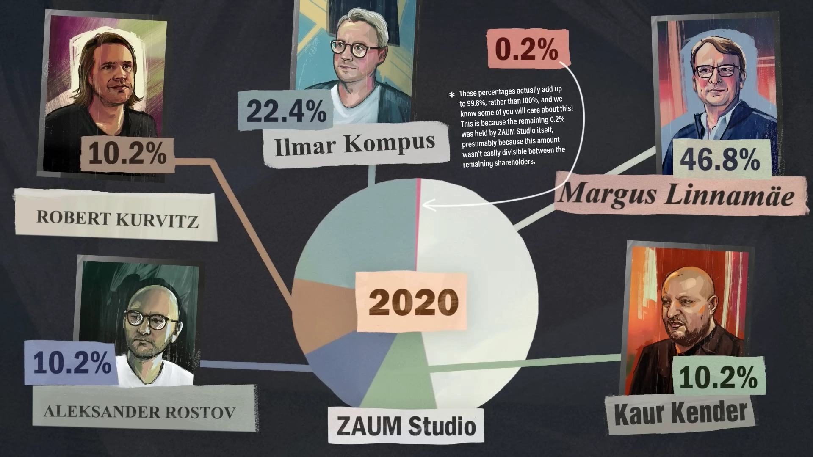
udziałowcy zaum studio
w 2021 r. margus linnamäe postanowił wycofać się ze studia w związku z kontrowersjami związanymi z wolnością prasy, jako że do niego należała gazeta postimees, której dotyczyła afera; linnamäe oczekiwał 4.8 milionów euro za udziały w „mm group”, która formalnie posiadała udziały w jego imieniu;
z biegiem czasu podział udziałów przesuwał się w stronę 20 % dla wszystkich pozostałych; ostatecznie resztę udziałów linnamäego wykupiła firma „yessirnosir limited”, której właścicielką jest anu reiman (partnerka tõnisa haavela, który pracował jako producent wykonawczy w zaum);
nieco później postanowiono o utworzeniu „zaum uk ltd” i przeniesieniu się do wielkiej brytanii; studio powstało w brighton; wtedy to dołączyła do niego hindpere; udziały ustalono na: kurvitz – 20 %, rostov – 20 %, kender – 20 %, ilmar – 20 %, yessirnosir ltd (reiman) – 20 %
linnamäe sprzedał udziały ilmarowi, przez co ten drugi stał się większościowym udziałowcem; według kendera linnamäe chciał jednak pozostać większościowym udziałowcem kontynuacji disco elysium, stąd powstało „newelysium ltd”; udziały tej nowej firmy ustalono następująco: linnamäe – 10 %, kompus – 5 %, zaum uk ltd – 85 %; reszta udziałowców się na to nie zgodziła, miała dowiedzieć się o tym dopiero po fakcie dokonanym, lecz ich zgoda formalnie nie była wymagana; sam ilmar nie potrafił potwierdzić swych słów dokumentami o tym iż wszyscy udziałowcy wiedzieli o sprzedaży;
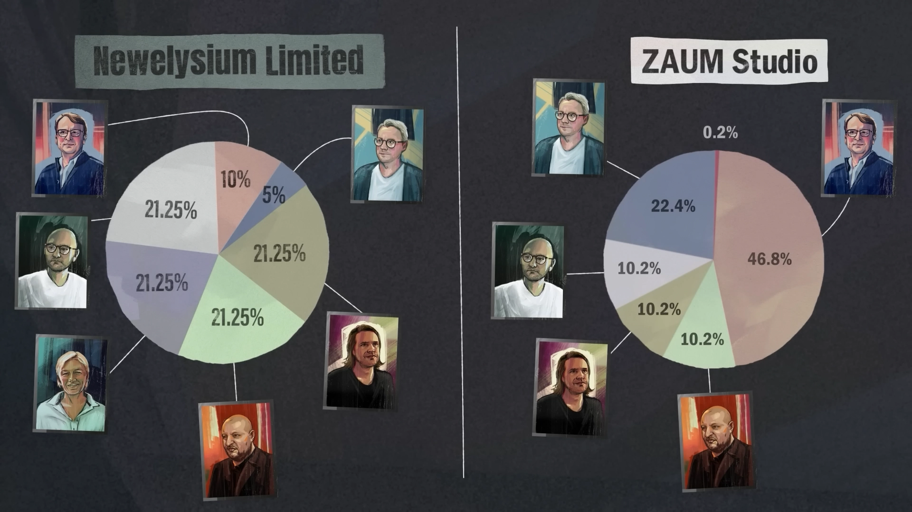
udziałowcy zaum studio i newelysium
by zdobyć pieniądze na udziały linnamäe'ego, kompus, za pośrednictwem swej firmy tütreke, kupił wersję roboczą opowiadania i cztery rysunki przedstawiające człowieka w kombinezonie kosmicznym, mające dotyczyć kontynuacji „disco elysium” o roboczym tytule „pioneer one”;
reiman sprzedała szkice artystyczne „disco elysium” kompusowi; przy okazji kupiła ona „studio 38”, które wydaje się służyć do ukrywania zarobków haavela ze względu na jego problemy z prawem;
tütreke zapłaciła za rzeczone rysunki 1 funta szterlinga, by w końcu odsprzedać je „zaum studio” za 4.8 miliona euro; tym samym użyto pieniędzy samego studio, by je przejąć;
tõnis haavel to szwagier kompusa; on sam znany jest z „toha capital”, piramidy finansowej, za co w przeszłości został skazany na kwotę 12 milionów euro („baku affair” z 2014 r.) i siedem miesięcy więzienia; miał obiecywać ziemie w baku w azerbejdżanie na własność inwestorom, lecz nic z tego nie wyszło; sąd ogłosił iż musi on nadal zapłacić 7 milionów poszkodowanym w ramach zadośćuczynienia; w międzyczasie postanawia on ogłosić bankructwo na łotwie, co jest uznawane w estonii w ramach unii europejskiej (bankruptcy tourism), choć on sam twierdzi iż nie ma to związku z próbą ominięcia zwrotu tychże pieniędzy;
kompus miał rzekomo po prostu czekać na dobrą okazję do sprzedania studia jakiemuś wielkiemu wydawcy jak tencent, microsoft czy ubisoft; byłaby to oferta opiewająca na miliony euro, zwłaszcza że wcześniej amazon wyrażał swe zainteresowanie stworzeniem serialu telewizyjnego w oparciu o świat gry (w czerwcu 2020 r. zaum i „dj2 entertainment” ogłosiły prace nad serialem telewizyjnym); w tymże to celu kompus miał rozmawiać z joshem sawyerem na „game developer conference”; jednak sam sawyer zaprzeczył że rozmawiali oni o „disco elysium”; pracownicy „zaum studio” wskazują raczej na „larian studios”; skądinąd, aktorka głosowa „baldur's gate 3” skrytykowała tworzenie kontynuacji „disco elysium” bez kurvitza;
kurvitz i rostov nic o tej transakcji nie wiedzieli, będąc zajętymi pracą kreatywną; zorientowali się o tym dopiero pięć miesięcy później, gdy kompus uzyskał już większość udziałów; plany zostały jednak pokrzyżowane zablokowaniem przez kurvitza takiej transakcji jako że nadal miał prawo tak uczynić;
*️⃣ zwolnienia
po tym, gdy kompus staje się głównym udziałowcem, trzej główni twórcy zostają zdegradowani z częściowych właścicieli do zwykłych pracowników; sytuacja ta trwa jakiś czas, dopóki kurvitz nie zapragnie powrócić do swej roli dyrektorskiej;
w październiku 2021 r. kurvitz napisał mejla do ilmara o tym, że chce być znacznie bardziej obecny w firmie; odmówiono mu, zatem zaczął żądać dostępu do szeregu dokumentów; część z tych dokumentów to akty, które już powinien znać, jak umowa udziałowców czy kontrakt pracowniczy; kompus w końcu przestał odpowiadać na tę dyskusję, co doprowadziło do ostatniego spotkania 9 listopada; wtedy to został zwolniony, potem rostov, i w końcu hindpere w grudniu 2022 r.;
formalnym powodem stała się próba kradzieży własności intelektualnej „zaum studio”; według kompusa, kilka dni po tym, gdy kurvitz został odsunięty od władzy, zasugerował on petteriemu sulonenowi (programiście), że ten mógłby mu udostępnić kod „disco elysium”, na co się nie zgodził; chodziły słuchy że kurvitz chce założyć swą własną firmę; kompus przyznał iż przechyliło to czarę goryczy wobec wybryków kurvitza;
kurvitz miał być zszokowany swym zwolnieniem, jednak kompus wysłał mu o tym informację na miesiąc przed; przedtem odbyła się wideorozmowa, na którą została zaproszona hindpere, lecz nie kurvitz; miał on wtedy zdjąć jej słuchawki i wtrącić się nieproszony; podobnych sytuacji było więcej, przez co oskarżono go wcześniej o toksyczne zachowanie;
kurvitz źle zniósł zwolnienie i przechodził co najmniej czteroletnią terapię;
jednocześnie w tym samym czasie martin luiga postanowił o rozwiązaniu kolektywu za/um ze względu na niespełnianie swych założeń („no longer represents the ethos it was founded on”); poinformował on też o zwolnieniu kurvitza, rostova i hindpere, co określili oni jako niedobrowolne („involuntarily left the company”);
kender początkowo uzyskał korzyść z przejęcia, tj. 500 tysięcy euro za „zaum studio uk”; jednak i on został zwolniony, gdy zaczął zadawać niewygodne pytania na temat przyszłości studia;
po odejściu trójki wspaniałych rolę scenarzystów przejęli argo tuulik i dora klindžić;
*️⃣ zatajone informacje
informacje o wielu zakulisowych działaniach docierały do zainteresowanych powoli acz nieubłaganie; kurvitz, rostov i hindpere mieli nie wiedzieć bezpośrednio o powstaniu newelysium; to hindpere odkryła z dokumentów księgowych, że kompus zakupił w lipcu „mm group”;
w 2022 r. wobec kompusa wystosowano wiele pozwów, by odzyskać pieniądze (4.8 milionów), co ostatecznie się udało; rostov i kurvitz stwierdzili, że odzyskanie pieniędzy nie rozwiązuje problemu, bo studio przejęto na mocy oszustwa;
kender twierdził iż kompus oszukał go na 913 tysięcy euro, w związku z czym zdecydował się wystosować przeciw niemu pozew sądowy; 28 października sąd zgodził się zająć pieniądze tütreke powiązane z zaum, by zapobiec sprzedaży udziałów, nie pozwalając na ich przelanie na konto bankowe poza jurysdykcją;
kender oskarżył również haavela o to, że miał on pociągać za sznurki i być szarą eminencją stojącą za przejęciem, albowiem „yessirnosir ltd” posiada wszystkie prawa do „disco elysium”, a jej właścicielką jest anu reiman, partnerka życiowa haavela; według kendera haavel preferował działać w ukryciu ze względu na swe bankructwo;
kurvitz również wystosował swój własny pozew przeciw zaum; ponadto, kurvitz i rostov napisali list otwarty przedstawiający w szczegółach ich wersję wydarzeń; wyrazili zamiar pozwania zaum zarówno w estonii jak i wielkiej brytanii, sądząc iż czyny kompusa i haavela nadają się na trzy lata więzienia; kompus złożył kurvitzowi i rostovowi ofertę kupna ich udziałów za około 2.5 miliona euro, co nie doszło do skutku;
według kurvitza i rostova zostali oni zwolnieni bezpodstawnie, jednak według zaum tych dwóch wyrażało ograniczone zaangażowanie w pracę i swe odpowiedzialności, a do tego dopuszczali się słownych nadużyć i dyskryminacji niektórych pracowników („limited to no engagement in their responsibility and work”); według samych pracowników zaś sytuacja ta nie jest czarno-biała;
14 marca 2023 r. studio wystosowało komunikat, w którym ogłosiło o zakończeniu wszelkich prawnych sporów wobec nich; kender postanowił pozbyć się wszelkich udziałów w „zaum studio uk”, a także opłacił koszty sądowe; pozew kurvitza i rostova został oddalony ze względu na brak dowodów; szczegóły spraw pozostają poufne;
17 marca 2023 r. kurvitz i rostov odpowiedzieli na to, stwierdzając że komunikat był mylący („wrong and misleading in several respects”) i przedstawił udziałowców jako naburmuszonych byłych pracowników; według nich pozew został oddalony ze względu na szerszą kampanię wymierzoną w nich, w związku z czym nadal będą poszukiwać prawnego sposobu na dociekanie swych praw;
kurvitz ze sprawy sądowej kendera dowiedział się, że tenże zaciągnął pożyczkę na 1.2 miliona euro na rzecz kompusa (prawdopodobnie na spłatę formalnych należności pozwów sądowych); kender najprawdopodobniej wycofał się z tej matni, bo nie chciał już mieć z nią nic do czynienia, dlatego zrzekł się swych udziałów; również yang zhang-taal (żona rostova), która była producentką w zaum, zdecydowała się odejść w 2022 r.;
*️⃣ the final cut
„the final cut” wprowadził kilka dodatkowych questów, a przede wszystkim voiceover, w trakcie powszechnego globalnego pandemonium covid-19;
helen hindpere, która nie ma udziałów w firmie, odpowiadała za „the final cut” jako główna scenarzystka; pamięta ona oryginalne czasy za/um, gdy kolektyw przechodził przez etap punkowego kontestowania zastanej rzeczywistości (the overcoats);
ze względu na wcześniejszy crunch, kurvitz i hindpere nie pracowali zbyt wiele nad „the final cut”; pojawił się za to pomysł na odbycie urlopu przez tę trójkę;
gdy pytano hindpere o deadline odpowiadała ona że nie ma żadnego terminu; kender i haavel mieli stwierdzić na to, że hindepre kłamie i się obija; hindpere była zaskoczona, gdy usłyszała, że deadline przypada w marcu; kender stwierdził, że to jego wina, że nie powiedział jej wcześniej; wymusiła ona zatem wideorozmowę, na której haavel nakrzyczał na nią, że nie nadaje się na swe stanowisko i powinna się wycofać;
z perspektywy kurvitza produkcja nie miała terminów i odbywała się jak krojenie plasterków salami;
rozszerzona i odnowiona wersja gry „the final cut” został zapowiedziana w grudniu 2020 r.; według hindpere poczynione zmiany bazowały na informacji zwrotnej od graczy; dodano głosy postaciom, w tym narratorowi, co ostatecznie ma się składać na 1.2 miliona słów; wcześniejsze udźwiękowienie głosowe z dashą nekrasovą i „chapo trap house” zostało całkowicie usunięte; cztery questy zostały wycięte, by zostać przerobionymi na questy politycznego zainteresowania (political vision quests);
niejako w międzyczasie tych wszystkich sporów i wypowiedzi medialnych studio postanowiło wypuścić aktualizację „collage mode”; po jego wydaniu w firmie powstał komitet jakości;
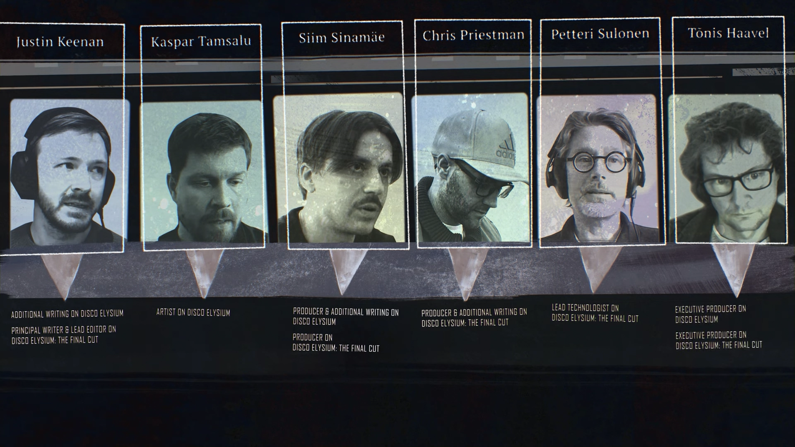
wybrani pracownicy zaum studio
*️⃣ argo tuulik
argo tuulik jest twórcą postaci cuno, chłopaków hardiego czy evrarta claire'a;
tuulik nie zdecydował się odejść z „zaum studio” po zwolnieniu kurvitza; nie zgadza się on z jego wersją wydarzeń, które uznaje za przedstawione w sposób manipulacyjny;
według niego komunikacja kurvitza z zespołem nie była jego mocną stroną; wspomina sytuację, gdy jeden z programistów miał chcieć pokazać coś robertowi, lecz ten odmówił twierdząc, że nie może nawet na to patrzeć i odszedł; to jeden z powodów dla których oskarżono kurvitza o toksyczne zachowanie;
co więcej, kurvitz nie napisał żadnego słowa do „the final cut”, a komunikowanie się z nim co do tej pracy miało być na tyle niejasne, że wręcz oszukańcze; mimo wszystko, bez niego i jego spójności co do świata przedstawionego, gra nie ujrzałaby światła dziennego;
hindpere była w przeszłości w związku z kurvitzem; nie uczyniła ona wiele w ramach „the final cut”, choć to jej przypisano zasługi;
w maju 2023 r. „people make games” opublikował swe śledztwo w sprawie sytuacji zaum, w którym wypowiedział się tuulik; klindžić stwierdziła iż zarząd firmy odizolował go w odpowiedzi na niepochlebne komentarze wypowiedziane w ich stronę;
*️⃣ dora klindžić
dołączyła do „zaum studio” by pracować nad y12, czyli kontynuacją „disco elysium”, jako scenarzystka z dodatkowym doświadczeniem w innych obszarach produkcji gier wideo;
według niej skalowanie firmy było samobójcze: dołączyła gdy pracowało tam 30 osób, z czego szybko stało się ich 100;
w pewnym momencie doszło do spotkania zarządu w nowym jorku; później przedstawiono pracownikom kompletnie nowy projekt, na który mieli się przestawić; ci uznali to za nieuczciwe, zwłaszcza że nie chodziło o kwestie prawne, a na pytanie o to dlaczego tak postanowiono nie było odpowiedzi; do tego część z tego uznano za obraźliwe, tj. kobiece postaci pisali ewidentnie mężczyźni nie mający pojęcia o psychologii;
zarząd wyraźnie chciał kontrolować informacje o grze, jednak nie spodziewał się wewnętrznej krytyki; tak czy inaczej, nie było wiadomo kto był odpowiedzialny za co, a menedżerowie naciskali na to, by pracować, a nie się obijać; potraktowano pisanie postaci jak tworzenie produktu, nie jak pracę kreatywną która wymaga ustalonego kierunku i wizji artystycznej; jednocześnie dostrzegano po jednej i drugiej stronie niekompetencję zarządu, dlatego też z czasem zaczęto wprowadzać do niego ludzi z doświadczeniem w branży gier;
swego czasu skomentowała ona swą pracę w studio: „widziałam dobrą robotę w zaum. widziałam również zarząd i kadrę produkcyjną terroryzującą pracowników kreatywnych, kłamstwa, gry o władzę, zwracanie ludzi przeciw sobie, niszczenie relacji i poczucia własnej wartości” (“i've seen good work done at za/um. i've also seen management and production staff terrorizing creatives, lying, playing power games, turning people against each other, destroying relationships and people's self-esteem. for this, there have been no repercussions.”)
klindžić wspomina iż zdarzyło się studiu tworzyć wytwory seksualizujące samobójstwo; klindžić wystąpiła przeciw temu, wskazując na to że niektórzy mogą czuć się przez to zdradzeni, na co niejaki ed tomaszewski (prezes zaum) rzekł: jeżeli uważasz, że produkty mogą zdradzać ludzi, to powinniśmy odbyć ta ten temat prywatną rozmowę;
w związku z tym, że zarząd oskarżał pracowników o to, co sam uczynił, klindžić napisała 80-stronicowy dokument opisujący mobbing, podpierając to zrzutami ekranowymi i nagraniami rozmów;
opuściła „zaum studio” po anulowaniu „project x7”;
*️⃣ toksyczne zachowania
inni pracownicy „zaum studio” twierdzą, że to kurvitz był najtrudniejszym człowiekiem do współpracy; nikt nie miał być zachwycony jego powrotem do roli dyrektorskiej; nadal, nie zgadza się on jednak na to, by traktować pracowników „zaum studio” jako oszustów;
kaspar tamsalu, który otrzymywał groźby śmierci od fanów, stwierdził że kurvitz nie chciał brać udziału w kształtowaniu kultury pracy i pilnowaniu poprawności procesu produkcyjnego;
petteri sulonen stworzył questy z moralistami i komunistami; według niego nad „the final cut” hindpere nie pracowała zbyt wiele, a kurvitz był obecny ze względu na nią; nikt miał nie znać terminów, bo hindepre ich nie przekazywała;
justin keenan twierdzi, że przed pracą nad kontynuacją „disco elysium”, trójka wspaniałych miała planować 2-miesięczny płatny urlop, co wprowadziło wrażenie iż są oni w jakiś sposób uprzywilejowani; wyglądało to tak, że kurvitz się nim wysłużył, by nie pracować nad „the final cut”;
hindpere twierdzi, że kurvitz i rostov pracowali po 12-17 godzin dziennie nad grą; niewątpliwie kurvitz był niezwykle zaangażowany w to, by gra okazała się dobra; według tuulika miał zachowywać się niczym neurotyczny artysta, wymazujący całe połacie tekstu powieści tylko dlatego że przestały mu się podobać;
kompus był niewidoczny jako współudziałowiec przez większość czasu; dopóki nie uzyskał większości udziałów nie pozwalano na kupowanie firmowego alkoholu; gdy zwolniono kurvitza, zaczęto organizować imprezy z alkoholem, gdzie wyciągano informacje od pracowników; w porto odbyło się kosztowne spotkanie całej firmy; miało miejsce pijaństwo, a na spotkaniu odpowiadano na pytania stosując taktykę nadmiernego słowotoku; mówiono tak by nic nie powiedzieć;
haavel odwiedził klindžić i tuulika w mieszkaniu klindžić po konflikcie z tamsalu; odbyła się wtedy rozmowa, którą rozmówczyni określiła jako socjopatyczną; padły pochlebne słowa i wyrażono chęć naprawy tego co zepsuto, jednak do obiecanej mediacji nigdy nie doszło; haavel w firmie wyrażał się personą urodzinowego chłopca; skądinąd sam tamsalu był znajomym tuulika i wtłoczył się na tyle w machinę firmową, że najwyraźniej zaczął działać równie bezwzględnie jak zarząd;
około miesiąc po premierze gry kurvitz zerwał relację z hindpere; stał się wtedy wobec niej toksyczny i wypowiadał się negatywnie o niej przed zarządem; w związku z tym jako główna scenarzystka miała kłopot z wykonywaniem swej pracy, gdyż kurvitz odmawiał współpracy; o pośrednictwo w komunikacji proszono tuulika;
menedżerowie wielokrotnie mówili pracownikom, by nie rozmawiali ze sobą poza pracą; nowi pracownicy z biegiem czasu mieli otrzymywać instrukcje, by szpiegować innych i donosić na nich; w samym biurze stosowano monitoring 360-stopniowymi kamerami;
o niektórych pracownikach mówiono że są toksyczni i niejako zabraniano kontaktu z nimi ze względu na przepływ pracy; gdy czekano na pracę klindžić, jednocześnie odmawiano jej w praktyce wykonania tejże; jeden podzespół nie mógł się komunikować bezpośrednio z drugim, zamiast tego należało to przekazać przełożonemu, który miał pełnić rolę posłańca;
zarząd wysługiwał się słabymi psychicznie ludźmi, by wykonywali oni to, czego nie chcieli dokonywać własnymi rękoma; co więcej, najbardziej sytuację chciały poprawić kobiety w studio, toteż później celowano w nie na tyle iż w pewnym momencie nie było żadnej;
jeszcze nim kender odszedł z firmy postanowiono zmienić dynamikę z właścicieli/szefów na właścicieli/proletariat, oferując pracownikom udziały w firmie; chodziło o to, by zatrzymać ludzi przy sobie, jednocześnie łagodząc niezadowolenie; niemniej, ludzie tacy jak tuulik, którzy byli w tym od samego początku, nie zostali do tego dopuszczeni;
podczas jednego ze spotkań kender miał pokazywać obsceniczne zdjęcia swej żony;
*️⃣ duchowi spadkobiercy
po sukcesie „disco elysium” rozpoczęto niezwłocznie prace nad kontynuacją i spin-off-ami; bezpośredni sequel nosił roboczą nazwę y12, a projektem tym kierowali kurvitz, rostov i hindpere; za projekt p1 odpowiadał zaś kender;
po zwolnieniu kurvitza, rostova i hindpere prace nad sequelem „project y12” kontynuowano przez kolejnych kilka miesięcy pod kierownictwem argo tuulika i dory klindžić, dopóki zarząd nie postanowił anulować projektu w połowie 2022 r.; zamiast tego mieli się oni zająć teraz samodzielnym dodatkiem, x7, nieco później przedstawionym jako „locust city: a disco elysium story”; prace rozpoczęto nim pojawił się outline opowiadania; dodano im członków do zespołu, gdy anulowano projekt p1 kendera, który odszedł z firmy; zespołowi udało się wyprodukować dobrze przyjęte wewnętrzne demo x7 w końcu 2023 r.; x7 miało posiadać „kooperacyjną” rozgrywkę dla jednego gracza z dwójką bohaterów: cuno i cunoesse, którzy w trakcie pięciu aktów uciekaliby z miasta po „drobnym” wypadku; tytułowe „miasto szarańczy” to kolonia tych insektów należącej do cuno, która najwyraźniej byłaby rozwijającą się „cywilizacją”;
w lutym 2024 r. „sports illustrated's glhf” przekazało informację, zgodnie z którą zaum zwolnił około 25 % załogi, włączając w to tuulika i klindžić, anulował x7 i y12; według tuulika zwolnienia celowały głównie w kobiety i w pracowników, którzy wcześniej narzekali na warunki pracy; „pc gamer” przekazał, że w tej sytuacji zaum ma jedynie dwa aktywne projekty: m0 (mobilna wersja „disco elysium”) oraz c4 (niepowiązana gra rpg);
trzy odrębne studia (dark math games, longdue games, summer eternal) ogłosiły 2024-11-11 prace nad duchowym spadkobiercą „disco elysium”, jako że prawa własności intelektualnej nie należą do twórców, tylko do yessirnosir; nie był to przypadek, lecz raczej zaplanowane budowanie wizerunku;
studia powstałe po wielkiej smucie
po odejściu z zaum, kurvitz i rostov założyli „red info” w czerwcu 2022 r.;
londyńskie „dark math games” skupia się na stworzeniu „xxx nightshift”; dyrektorem w tej firmie jest kender, który pociągnął za sobą paru pracowników zaum;
w londyńskim „longdue games” z kolei dyrektorem jest grant roberts, mający ponad 20-letnie doświadczenie w branży; pracował on m.in. w „sierra online”, bungie, rocksteady, ale też i w „sweet baby inc.”; do tego znajdziemy tam martina luigę (kolektyw za/um) i lenvala browna (narratora „disco elysium”); longdue ogłosiło swą grę hopetown w kwietniu 2025 r.; gra została sfinansowana na kickstarterze;
do tego mamy „summer eternal” z argo tuulikiem i dorą klindžić (którzy wcześniej byli zatrudnieni zarówno w „dark math games” jak i longdue) i olgą moskviną (zaum senior developer);
riaz moola, twórca hyperiondev (cogrammar ltd), zainwestował w „dark math games” wkrótce po dołączeniu tamże tuulika i klindžić oraz w „longdue games” (w którym uczestniczą polacy); ponieważ obydwoje pracowali przez 7 tygodni w „dark math games”, wystosowano wobec nich pozew co do niewywiązania się z warunków umowy (non-compete clause); riaz moola miał bowiem doprowadzić do podpisania przez nich umowy rezygnacyjnej w której zrzekają się do utworzenia nowego studia growego (które utworzyli); w międzyczasie zostali pozwani przez zaum w związku z rzekomym posiadaniem własności zaum, czyli „locust city” na pendrivie; moola się o tym dowiedział, a także twierdził, że był naciskany przez to na zwolnienie tejże dwójki; cogrammar zaoferował anulowanie sprawy, jeżeli klindžić i tuulik zapłacą koszty sądowe, tj. 90 tysięcy funtów szterlingów; jeżeli zaś nie, to być może szykuje się kolejny pozew o zniesławienie w związku z wypowiedziami online tuulika; z tego też powodu para ta przeniosła się chorwacji (klindžić jest chorwatką), a tuulik założył nawet zbiórkę społecznościową;
*️⃣ opinia
zaum studio zostało przejęte przez socjopatów i psychopatów, którzy wprowadzili obsesyjną kontrolę nad informacjami, tudzież wykorzystali naturalną tendencję neurotycznego kurvitza i reszty pracowników, by ją utwardzać, kosztem toksycznych warunków pracy; z jednej strony problemem byli szefowie, którzy kompletnie nie znali się na grach wideo, a z drugiej strony podejście samego kurvitza nie pomagało; co więcej, to podczas „uprzywilejowanych” wakacji trójki wspaniałych kompus zakupił akcje linnamäego pieniędzmi samego zaum; być może gdyby nie to, kurvitz zareagowałby na czas; jednak było to już po premierze gry, gdy stał się chamski wobec hindpere; można domniemywać iż był bardziej zaabsorbowany dawnymi animozjami niżeli sprawami firmy;
wydaje się, że według kurvitza cały ten spór opiera się o to, że kompus, haavel i kender ukradli za/um przed nim i przed jego najbliższymi współpracownikami; wydaje się również iż rostov i kurvitz mogli nie zrozumieć w pełni na jakie warunki przystali; kurvitz to taki trochę estoński sapkowski, idealistyczny komunista, który być może nie chciał nawet zrozumieć kapitalizmu w ramach którego musiał działać; w pewnym sensie samo życie zafundowało im sytuację rodem z „disco elysium”;
jednocześnie zarząd „zaum studio” dopuszczał się od samego początku silosowania informacji; z biegiem czasu postarano się o to, by pozbyć się każdego niewygodnego osobnika;
kontynuacja „disco elysium” stoi pod znakiem zapytania; trudno sobie wyobrazić jak ci ludzie mieliby się ze sobą pogodzić;
społeczność patrzy na to przez pryzmat atmosfery jaka wokół tego panuje; według graczy kurvitz, rostov i hindpere powinni wrócić do zaum, jednak reszta oryginalnych pracowników za/um niekoniecznie by tego chciała; poza tym rozdział stał się formalny w postaci studiów tworzących własną wizję na nowe „disco elysium”;
This achievement is for getting your "Good Cop/Bad Cop" point total to +10. It's tracked on your stats page once you get the ledger out of the dumpster and view the sticker on it under Kim's headlights. You get "good cop" points from doing things or saying things Kim approves of - you have to do them in his sight, or have a conversation with him.
Unlocked during the final conversation of the game. Kim needs to have survived the Tribunal (during that, make sure you warn him he's about to be attacked).
This achievement is for getting your Good Cop/Bad Cop rating to a -5, and it doesn't take long from the start of the game. For the duration of your play, do not engage in any extra dialog, and make sure anything you do say isn't polite. Get your ledger. Examine the clip and the white papers, in either order. Talk to Kim, insulting him and prioritizing your medical condition over the case. Be racist. Kim will want to talk to you now. Talk to him and say 'I was just trying to convey I understood his greivances,' then 'maybe he has a point,' 'well, actually...,' and then 'what do you mean? I'm in the right here' to cause a Rhetoric check.
You have to talk to Kim as soon as you have the 8 Authority points. Choose the option "I want to talk about *you*" and ask him to tell you a secret. An Authority skill check will apear, and after a cool sequense, the achievement will pop.
On the third night “Send Kim away for the night by going to your door at a late hour. Then when the clock stops at 2am and you are by yourself, go by his door (right next to yours at the starting location, middle door on the top floor) and finish his dialogue.
You get the f**K the world and pissf***t jackets on day 4 from the guys checking out Kim's car (requires suggestion 8 and rhetoric 7). You then put on the f**K the world jacket and talk to Kim. He'll put on the other one.
Pick communist dialogue choices nine times. The ledger tracks this under 'communist'. Be anti-capitalist. Support the strikes and workers' rights. Interviewing Joyce (the posh lady with the boat) gives you a lot of opportunities for this.
Pick communist dialogue choices nine times. The ledger tracks this under 'communist'. Be anti-capitalist. Support the strikes and workers' rights. Interviewing Joyce (the posh lady with the boat) gives you a lot of opportunities for this.
This achievement is slightly confusing at first glance but that's only because Centrist isn't one of the trackable stats in your officer profile. The stat you are looking to track is Moralist and you will receive a point towards it every time you answer in a neutral way when a political question is asked. Moralism is a political stance that supports the system/government and believes in progress through steady and slow change.
Pick dialogue choices about art and artists five times. This is not tracked in the ledger and it's not always obvious what contributes. If there's an option that mentions painting, colours, perspective etc., then pick it. They're often quite pretentious. Cindy the graffiti artist gives you at least two. You can often repeat conversations and choose different choices. This helps clear the dialogue-related achievements quickly.
Pick sinister dialogue choices that talk about the world ending, that mention things like 'the Coming End', 'the Prophecy', 'the Great Panic', the end being nigh etc. The ledger tracks this under ‘Apocalypse/Armageddon cop’.
Pick pro-capitalist dialogue choices nine times. The ledger tracks this under ‘ultraliberal’. Pick choices that focus on wealth, money, the free market, entrepreneurship, taxes etc.
You will know you are on the right track and getting closer to the achievment when your brain chimes in and says your 'copotype' is starting to look like Sorry Cop.
During certain dialogues you will be presented with responses that all correspond to each 'copotype'. Find the one that sounds completely normal and level headed, sounds like actual police work, or argues you are a "normal cop".
Pick dialogue choices confirming you’re a policeman seven times. This is not tracked in the ledger. Most of the time the choice is ‘I am the law’, but not always.
There are more than 5 objects in the game that you can bang up, so you have a few options if you miss any. Klaasje's (the disco dancer's) door in the Whirling in Rags. The Dumpster behind the Whirling in Rags, by the body. Klaasje's locked door up on her rooftop. The Mailbox that is between the Whirl in Rags and the bookstore, close to Kim's vehicle. The Furnace that is inside the Doomed Commercial Area. The Tree beside the street vendor, near the pawn shop.
You need to say para-natural things six times. Choose anything involving ghosts, the netherworld, curses etc. Investigating the cursed district for the bookshop owner is a good way to get opportunities.
Located behind the blue door in the kitchen of the Whirling-in-Rags. A key is needed to enter this location. I found it by clicking the window next to Titus and his gang by passing the skill check by/at the window. After that, all you need to do is finish the dialog with the machine on the far right of the new room, highlighted behind the wall.
You need to acquire the apricot chewing gum wrapper. This is found in the Pour L'Homme Labourer Jeans (the jeans are found in the coal room next to Cindy's location). You need to trigger the option to allow you to smell the gum wrapper. This is done by interacting with it in your inventory, but the option to smell it doesn't appear automatically. It seems you need to read the Damaged Ledger item. Get the headless figurine from the pawn shop. Don’t give to anyone until you reach the island. Once you are at the island inspect the bed in the building. Take a nap. Go outside and meet the person across the water. Offer the headless figurine.
This will take nearly the entire playthrough. It cannot be done without performing the autopsy. Critical: you have to speak to Manana about the missing armor pieces and declare your intention to collect them all. This gives you the task to find all the armor pieces, and it is completing this task that triggers the achievement.
When you walk near the river just south of the church, you will get a notification that there's something in the water. You will need to have electrochemistry at 8 to see the item and pick it up. The item is a leopard suit that replaces your underwear. Put it on and the achievement pops.
Straight out the gate talk to Annette outside the bookstore and be thorough with her dialogue trees so you can pass her skill check correctly (deduce her nail biting) go inside the bookstore and speak with the owner pointing out that Annette is clearly stressed out, Annette now should be inside reading a book, talk to her to get "Dick Mullen's hat". You need 8 real to buy the Dick Mullen book. Proceed to Day 2 do the Hardie's gang interrogation. The window at the back of the room where the Hardie's are seated will have a perception check to acquire the backroom key where you'll find the Pinball makers coat. Enter the bookstore, equip the hat and coat and read the book to the end. Talk to both Annette and the owner afterwards about the book being incomplete, leave the store and a prompt appears, select the "investigator" tree and read the book again, select Modus: Mullen."
You can only do this if you: do not arrest or evict the ravers by the church, complete enough of ‘Help Ravers Start a Nightclub’ so they move into the church; Once you’ve collected four Moralist points you’ll unlock ‘Kingdom of Conscience’ in the Thought Cabinet. Make sure you research it. Find Sunday Friend on the coast. He appears after 8am on the boardwalk next to the bullet-ridden building. You’ll need to ‘find someone with technical expertise’. They should send the warship to pick you up.”
This achievement is for the Communist ("Mazovian Socio-Economics") thought, and it's probably the easiest of the four. Trigger this with at least four communist-related dialog options by the end of day 3, then select the communist thought during your dream sequence ("I'm building communism for all. This time we won't fail... [pursue thought]". Finally, have a conversation with yourself as soon as you awake and opt into the quest when it gives you the chance.
You will need your Visual Calculus to be at least an 8. You also need to complete the quest "Dead body on the boardwalk". Once you've completed this quest AND raised your Visual Calculus, just revisit the apartment building (back upstairs on the second story balcony). You will then receive a yellow thought prompt to revisit the boardwalk.
You need to not have lowered the shipping container near Evart's office, and finishing the quest requires playing all the way until after the showdown. The orb you need is "Indirect Modes of Taxation." Once you go to bed on day 3, you'll get the dream sequence, and when prompted you need to select "I'm just looking out for my economic self-interest... [pursue thought]".
This achievement is for the Fascist dialog options (giving you "Revacholian Nationhood" in your thought cabinet). You don't need to internalize the thought, just gain access to it. During the first three days, you can do a couple of things that will speed things up later: internalize "Jamais Vu (Derealization)" and fully learn about reality from Joyce. When you go to bed on day 3, you'll need to select the dialog option "I can't give up. I have to keep going, for Revachol... [pursue thought]". From there, you can finish the quest and get the achievement.
On the evening of Day 2, you'll need to pay Garte for a room, only what we're going to do is refuse, but continue to ask for a free room. Eventually he'll tell you it's the dumpster out back. Embrace your inner Hobocop, exit the Whirling-in-Rags and go to sleep in the dumpster. The achievement will unlock and you'll get a game-over.
You need high Composure and Drama for this. You also need Authority of 4 or above. Exhaust all of René's dialogue to unlock a Composure skill check, which when passed has him reveal his military history and how he got his medal. A difficult Drama skill check appears, where you have the option to out-do his story. Pass it, and he says you are more deserving than him of one of his bravery medals, which he gives you. Once you progress into Day 3 onwards and get both signatures for the union boss and post the envelope, you can set up the meeting to get your gun back from 22:00 that night. Go to the fish market area, near the church on the boardwalk, and confront The Pigs. It's quite hard to mess this up, as the gun can't go off, but you can lock yourself out of the achievement of you're mean or threatening to her. Once it has de-escalated, play along that she's a police officer ("patrol officer Pigs") and an Authority success should chime in to give the option of bowing to her and awarding her René's bravery medal. I would also like to add that you specifically have to be alone in this scenario in order to get the prompt to bow to the woman.
This can be unlocked any day after 22:00 (without Kim) from day 3 onward, you'll need 9 points in hand/eye coordination so allocate skill points as necessary. The location you need to go to is north of the church, past the impossible skill check bunker, nearby the phasmid trap, you need your 9 points in hand/eye coordination for a prompt to appear.
First off, we need to access the Doomed Commercial District. Once we break through, equip your Flashlight and we need to head north and then west into a room with a big white bird. Unequip your flashlight. Make a Quick Save. Load the Quick Save. The premise here is that we're breaking the boundaries of the game - when we're in the dark without our flashlight, we're out of bounds, so the game teleported us back into bounds, triggering the achievement.
This achievement requires a very specific skill point allocation and MUST be done on Day 3 or you will miss your only opportunity. You need Authority 6+ Endurance 6+ Composure 6+ Conceptualization 4+. Talk to Gary and exhaust dialogue until you get skill checks in Authority and Conceptualization. Then you can ask about the delicious desert which prompts an endurance check. Talk to Morrell and exhaust dialogue until you accept the task to check his traps, this triggers both him and Gary to appear at the Whirling Rags once you leave the area. Complete the check traps task and report to Morrell at the Whirling Rags. From here you cannot leave the Whirling Rags or Gary will leave. Gary will be standing at the bar, now you must talk to him and pass 4 passive skills checks (same 4 skills listed above) to receive the Deluxe Pie, interact with it in your inventory and select share with Kim.
You can interact with the dumpster, talk to Cuno, even the footprints, but do not ever click on the body. At the final conversation, you need to pick the right dialogue options. When talking to Jean Vicquemare, show him the gun (or admit you don't have one), until he accuses Harry of being a horrible drunk. Reply with "I quit drinking. Forever. It's only me in this boring hell hole now." When he says "I don’t buy it. Why do you smell like a *corpse* then? Huh?", say "Wait, what smell?! I didn't even get close to the damn corpse and I *still* solved the case. That's how good I am."
Basically what you have to do to restore the hidden photos is use one of the first 4 filters on specific areas and then move and zoom the camera to make hidden picture fragments clear. After collecting 4 of these you can use them to restore a photo and then use the camera to get a little lore explanation for the scene on the picture. These fragments are found with the Daguerreotype filter.